Chapter 4 · The Portuguese Vineyard and Wine Book
The Portuguese wine regions
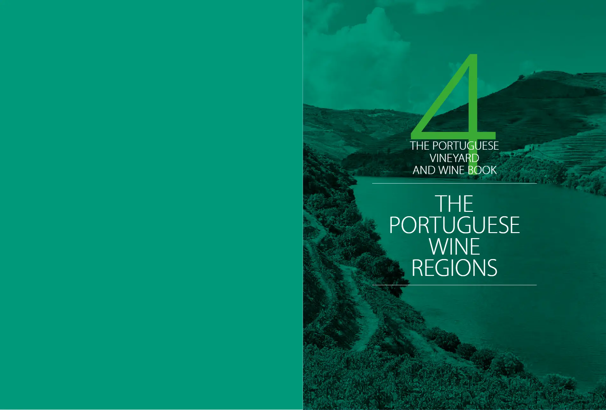
Text · Pages 66–67
4THE PORTUGUESE VINEYARD AND WINE BOOK THE PORTUGUESE WINE REGIONS

Text · Pages 68–69
PORTUGUESE WINE REGIONS Geographical indications and protected designations of origin DOC OR DOP (Protected Denomination of Origin) IG (Geographic Indication) OR IGP (Protected Geographical Indication) VINHO (formerly designated as vinho de mesa, or table wines.
Wine Region Vinho Verde Trás-os-Montes Douro e Porto Távora-Varosa Dão Bairrada Beira Interior Lisboa Tejo Península de Setúbal Alentejo Algarve Açores Madeira
Area 24,371 ha 9,701 ha 43,466 ha 2,274 ha 13,409 ha 13,391 ha 14,059 ha 19,869 ha 12,847 ha 8,027 ha 25,924 ha 1,412 ha 1,708 ha 681 ha
CORVO
FLORES
FA I A L
GRACIOSA S. JORGE
TERCEIRA
PICO
S. MIGUEL
AÇORES wine region DOP Graciosa DOP Biscoitos DOP Pico
SANTA MARIA
VINHO VERDE wine region DOP Vinho Verde – Sub-regiões: Sub-região de Monção Sub-região Lima Sub-região Cávado Sub-região Ave Sub-região Sousa Sub-região Basto Sub-região Amarante Sub-região Baião Sub-região Paiva DÃO AND LAFÕES wine region DO Dão – Sub-regiões: Sub-região Alva Sub-região Besteiros Sub-região Serra da Estrela Sub-região Castendo Sub-região Terras de Senhorim Sub-região Terras de Azurara Sub-região Silgueiros Sub-região IG Terras de Lafões DO Lafões BAIRRADA wine region DO Bairrada Sub-região Terras de Sicó LISBOA wine region Sub-região Alta Estremadura DOP Encostas d’Aire Sub-região Alcobaça Sub-região Ourém Sub-região Estremadura DO Óbidos DOP Alenquer DOP Arruda DOP Torres Vedras DOP Lourinhã (exclusivamente aguardente) DOP Bucelas (exclusivamente brancos) DOP Colares DOP Carcavelos PENÍNSULA DE SETÚBAL wine region DOP Setúbal e Palmela DOP Palmela DOP Setúbal
Bibliographic references: For the elaboration of the regional profiles of the different Wine-regions we adapted the existing information published in the Annuary of the Portguese Wine Institute (IVV) of the years 2012 e 2022 and of the reginal interprofessional Wine-commissions (CVRs). The Terroir linked information are taken over from the digital Archiv UPM (Madrid).
MADEIRA
PORTO SANTO MADEIRA wine region DOP Madeira DOP Madeira
TRÁS-OS-MONTES wine region DOP Trás-os-Montes – Sub-regiões Sub-região Chaves Sub-região Valpaços Sub-região Planalto Mirandês DOURO AND PORTO wine region DOP Porto e Douro Baixo Corgo Cima Corgo Douro Superior TÁVORA-VAROSA wine region DOP Porto e Douro DO Távora-Varosa BEIRA INTERIOR wine region DOP Beira Interior – Sub-regiões Sub-região Castelo Rodrigo Sub-região Pinhel Sub-região Cova da Beira TEJO wine region DO do Tejo – Sub-regiões Sub-região Tomar Sub-região Santarém Sub-região Cartaxo Sub-Região Almeirim Sub-região Coruche Sub-região Chamusca ALENTEJO wine region DO Alentejo – Sub-regiões Sub-região Portalegre Sub-região Borba Sub-região Redondo Sub-região Évora Sub-região Reguengos Sub-região Granja-Amareleja Sub-região Moura Sub-região Vidigueira ALGARVE wine region DOP Algarve – Sub-regiões Sub-região Lagos Sub-região Portimão Sub-região Lagoa Sub-região Tavira
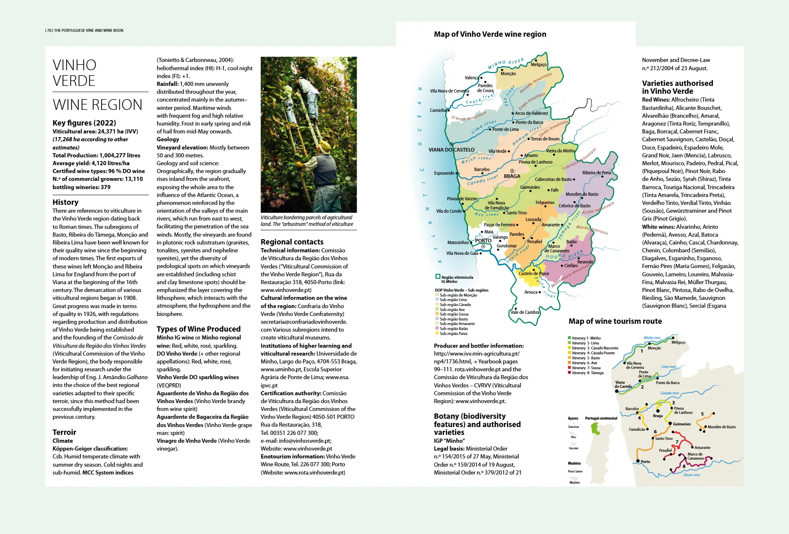
Text · Pages 70–71
VINHO VERDE WINE REGION Key figures (2022) Viticultural area: 24,371 ha (IVV) (17,268 ha according to other estimates) Total Production: 1,004,277 litres Average yield: 4,120 litres/ha Certified wine types: 96 % DO wine N.º of commercial growers: 13,110 bottling wineries: 379 History There are references to viticulture in the Vinho Verde region dating back to Roman times. The subregions of Basto, Ribeira do Tâmega, Monção and Ribeira Lima have been well known for their quality wine since the beginning of modern times. The first exports of these wines left Monção and Ribeira Lima for England from the port of Viana at the beginning of the 16th century. The demarcation of various viticultural regions began in 1908. Great progress was made in terms of quality in 1926, with regulations regarding production and distribution of Vinho Verde being established and the founding of the Comissão de Viticultura da Região dos Vinhos Verdes (Viticultural Commission of the Vinho Verde Region), the body responsible for initiating research under the leadership of Eng. J. Amândio Galhano into the choice of the best regional varieties adapted to their specific terroir, since this method had been successfully implemented in the previous century. Terroir Climate Köppen-Geiger classification: Csb. Humid temperate climate with summer dry season. Cold nights and sub-humid. MCC System indices
(Tonietto & Carbonneau, 2004): heliothermal index (HI): H-1, cool night index (FI): +1. Rainfall: 1,400 mm unevenly distributed throughout the year, concentrated mainly in the autumn– winter period. Maritime winds with frequent fog and high relative humidity. Frost in early spring and risk of hail from mid-May onwards. Geology Vineyard elevation: Mostly between 50 and 300 metres. Geology and soil science: Orographically, the region gradually rises inland from the seafront, exposing the whole area to the influence of the Atlantic Ocean, a phenomenon reinforced by the orientation of the valleys of the main rivers, which run from east to west, facilitating the penetration of the sea winds. Mostly, the vineyards are found in plutonic rock substratum (granites, tonalites, syenites and nepheline syenites), yet the diversity of pedological spots on which vineyards are established (including schist and clay limestone spots) should be emphasized the layer covering the lithosphere, which interacts with the atmosphere, the hydrosphere and the biosphere. Types of Wine Produced Minho IG wine or Minho regional wine: Red, white, rosé, sparkling. DO Vinho Verde (+ other regional appellations): Red, white, rosé, sparkling. Vinho Verde DO sparkling wines (VEQPRD) Aguardente de Vinho da Região dos Vinhos Verdes (Vinho Verde brandy from wine spirit) Aguardente de Bagaceira da Região dos Vinhos Verdes (Vinho Verde grape marc spirit) Vinagre de Vinho Verde (Vinho Verde vinegar).
Viticulture bordering parcels of agricultural land. The “arbustrum” method of viticulture Regional contacts Technical information: Comissão de Viticultura da Região dos Vinhos Verdes (“Viticultural Commission of the Vinho Verde Region”), Rua da Restauração 318, 4050-Porto (link: www.vinhoverde.pt) Cultural information on the wine of the region: Confraria do Vinho Verde (Vinho Verde Confraternity) secretaria@confrariadovinhoverde. com Various subregions intend to create viticultural museums. Institutions of higher learning and viticultural research: Universidade de Minho, Largo do Paço, 4704-553 Braga, www.uminho.pt, Escola Superior Agrária de Ponte de Lima; www.esa. ipvc.pt Certification authority: Comissão de Viticultura da Região dos Vinhos Verdes (Viticultural Commission of the Vinho Verde Region) 4050-501 PORTO Rua da Restauração, 318, Tel. 00351 226 077 300; e-mail: info@vinhosverde.pt; Website: www.vinhoverde.pt Enotourism information: Vinho Verde Wine Route, Tel. 226 077 300; Porto (Website: www.rota.vinhoverde.pt)
OCEAN
T
I
C
N
A
Map of Vinho Verde wine region
M
I
N
HO
R IVER
Melgaço
November and Decree-Law n.º 212/2004 of 23 August.
Valença
Paredes
Vila Nova de Cerveira
de Courar ri v
e
Co ura
Monção
Vez river
P
eneda mountain ajo mountain
So
Caminha D ’A r g a
H
m
ou Li
nt m
a a
i
n r
i
v
er Ponte
de
Arcos de Valdevez LimPaoomnteemdarTieBvrareracsrGadereêsBmouoruont
a
in
VIANA DO CASTELO
Vila Verde
Vieira do Minho
Esposende
Ne i va r i ver
Barcelos
C ávado
river
Amares
Póvoa de Lanhoso
Cabreira
BRAGA
Cabeceiras de Basto
mountai Ribeira
n
de Pena
Guimarães
Fafe
Mondim de Basto
Póvoa de Varzim
Varieties authorised in Vinho Verde Red Wines: Alfrocheiro (Tinta Bastardinha), Alicante Bouschet, Alvarelhão (Brancelho), Amaral, Aragonez (Tinta Roriz, Tempranillo), Baga, Borraçal, Cabernet Franc, Cabernet Sauvignon, Castelão, Doçal, Doce, Espadeiro, Espadeiro Mole, Grand Noir, Jaen (Mencia), Labrusco, Merlot, Mourisco, Padeiro, Pedral, Pical, (Piquepoul Noir), Pinot Noir, Rabo de Anho, Sezão, Syrah (Shiraz), Tinta Barroca, Touriga Nacional, Trincadeira (Tinta Amarela, Trincadeira Preta),
Vila do Conde
Vila Nova de Famalicão
Felgueiras
A v e r i v e r Santo Tirso
Lousada
Celorico de
Basto Alvão
mountain
ri
Verdelho Tinto, Verdial Tinto, Vinhão (Sousão), Gewürztraminer and Pinot Gris (Pinot Grigio).
S er Tâmeg a ve r
L
Matosinhos
Paços de Ferreira
Maia Valongo PORTO
Paredes
Gondomar
Pena
Amarante el Marco
Marão montain Baião
Vila Nova de Gaia
ousa r iv
de D
Canavezes O U RO R
I
V
E
R
Resende
White wines: Alvarinho, Arinto (Pedernã), Avesso, Azal, Batoca (Alvaraça), Cainho, Cascal, Chardonnay, Chenin, Colombard (Semilão), Diagalves, Esganinho, Esganoso,
T
A
Região vitivinícola IG Minho DOP Vinho Verde – Sub-regiões Sub-região de Monção Sub-região Lima
Castelo de Paiva ai
M
o
Cinfães ntemuro mo
u
nta
i
n
va r P
Arouca i v e r
Fernão Pires (Maria Gomes), Folgasão, Gouveio, Lameiro, Loureiro, MalvasiaFina, Malvasia Rei, Müller Thurgau, Pinot Blanc, Pintosa, Rabo de Ovelha, Riesling, São Mamede, Sauvignon
Sub-região Cávado Sub-região Ave Sub-região Sousa
Vale de Cambra
(Sauvignon Blanc), Sercial (Esgana
Sub-região Basto Sub-região Amarante
Map of wine tourism route
Sub-região Baião
Sub-região Paiva
Itinerary 1- Minho
Minho river
Producer and bottler information: http://www.ivv.min-agricultura.pt/ np4/1736.html, Yearbook pages
Itinerary 2- Lima Itinerary 3- Cávado Nascente Itinerary 4- Cávado Poente Itinerary 5- Basto Itinerary 6- Ave
1 Vila Nova
Monção
Melgaço
99–111. rota.vinhoverde.pt and the
Itinerary 7- Sousa Itinerary 8- Tâmega
de Cerveira Ponte
Lima river
Comissão de Viticultura da Região dos Vinhos Verdes – CVRVV (Viticultural
Viana do Castelo
de Lima 2
Ponte da Barca
Commission of the Vinho Verde
Cávado river
Region): www.vinhoverde.pt. Botany (biodiversity features) and authorised varieties IGP “Minho” Legal basis: Ministerial Order n.º 154/2015 of 27 May, Ministerial Order n.º 159/2014 of 19 August, Ministerial Order n.º 379/2012 of 21
Açores Graciosa
Portugal continental
Pico
Terceira
Madeira Porto Santo
Barcelos 4
Braga
Famalicão 6
3 Póvoa de Lanhoso Guimarães
5 Mondim de Basto
Santo Tirso 7
Porto
Penafiel
Amarante Marco de Canaveses
8
Douro river
Madeira
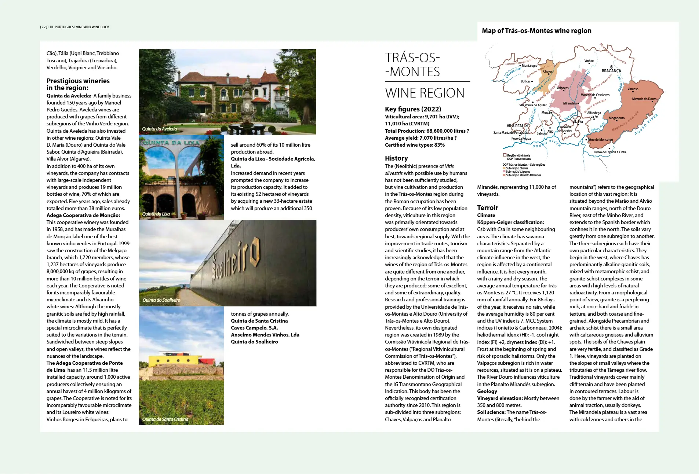
Text · Pages 72–73
Cão), Tália (Ugni Blanc, Trebbiano Toscano), Trajadura (Treixadura), Verdelho, Viognier and Viosinho. Prestigious wineries in the region: Quinta da Aveleda: A family business founded 150 years ago by Manoel Pedro Guedes. Aveleda wines are produced with grapes from different subregions of the Vinho Verde region. Quinta de Aveleda has also invested in other wine regions: Quinta Vale D. Maria (Douro) and Quinta do Vale Sabor. Quinta d’Aguieira (Bairrada), Villa Alvor (Algarve). In addition to 400 ha of its own vineyards, the company has contracts with large-scale independent vineyards and produces 19 million bottles of wine, 70% of which are exported. Five years ago, sales already totalled more than 38 million euros. Adega Cooperativa de Monção: This cooperative winery was founded in 1958, and has made the Muralhas de Monção label one of the best known vinho verdes in Portugal. 1999 saw the construction of the Melgaço branch, which 1,720 members, whose 1,237 hectares of vineyards produce 8,000,000 kg of grapes, resulting in more than 10 million bottles of wine each year. The Cooperative is noted for its incomparably favourable microclimate and its Alvarinho white wines: Although the mostly granitic soils are fed by high rainfall, the climate is mostly mild. It has a special microclimate that is perfectly suited to the variations in the terrain. Sandwiched between steep slopes and open valleys, the wines reflect the nuances of the landscape. The Adega Cooperativa de Ponte de Lima has an 11.5 million litre installed capacity, around 1,000 active producers collectively ensuring an annual havest of 4 million kilograms of grapes. The Cooperative is noted for its incomparably favourable microclimate and its Loureiro white wines: Vinhos Borges: in Felgueiras, plans to
Quinta da Aveleda Quinta da Lixa Quinta do Soalheiro Quinta de Santa Cristina
sell around 60% of its 10 million litre production abroad. Quinta da Lixa - Sociedade Agrícola, Lda. Increased demand in recent years prompted the company to increase its production capacity. It added to its existing 52 hectares of vineyards by acquiring a new 33-hectare estate which will produce an additional 350 tonnes of grapes annually. Quinta de Santa Cristina Caves Campelo, S.A. Anselmo Mendes Vinhos, Lda Quinta do Soalheiro
Map of Trás-os-Montes wine region
Mo
TRÁS-OS-MONTES WINE REGION Key figures (2022) Viticultural area: 9,701 ha (IVV); 11,010 ha (CVRTM) Total Production: 68,600,000 litres ? Average yield: 7,070 litres/ha ? Certified wine types: 83% History The (Neolithic) presence of Vitis silvestris with possible use by humans has not been sufficiently studied, but vine cultivation and production in the Trás-os-Montes region during the Roman occupation has been proven. Because of its low population density, viticulture in this region was primarily orientated towards producers’ own consumption and at best, towards regional supply. With the improvement in trade routes, tourism and scientific studies, it has been increasingly acknowledged that the wines of the region of Trás-os-Montes are quite different from one another, depending on the terroir in which they are produced; some of excellent, and some of extraordinary, quality. Research and professional training is provided by the Universidade de Trásos-Montes e Alto Douro (University of Trás-os-Montes e Alto Douro). Nevertheless, its own designated region was created in 1989 by the Comissão Vitivinícola Regional de Trásos-Montes (“Regional Vitivinicultural Commission of Trás-os-Montes”), abbreviated to CVRTM, who are responsible for the DO Trás-osMontes Denomination of Origin and the IG Transmontano Geographical Indication. This body has been the officially recognized certification authority since 2010. This region is sub-divided into three subregions: Chaves, Valpaços and Planalto
Cáv
L
a
rouc ado
o ri
mountain Montalegre ver Barroso
mo
untain Chaves
Boticas
iver
ega
m Pa
d
rela
mo
Vila Pouca de Aguiar
Murça
C o rgo river
VILA REAL Santa Marta de Penaguião
SabrosaAlijó
Tâ r untain
Vinhais
ntesinho mountain BRAGANÇA
Tuela R i v e r ain Sab o r river
Valpaços
Nogueira mount
Vimioso
Macedo de Cavaleiros
Mirandela Tua river Vila Flor Carrazeda de Anciães
B rive tain U RO
ornes mountain
Miranda do Douro
Alfândega
da Fé Sabo r
r
Mogadouro Mogadouro
moun
RIVER
DO
Peso da Régua DO URO
RIVER
Torre de Moncorvo
Região vitivinícola
Freixo de Espada à Cinta
DOP Transmontano
DOP Trás-os-Montes – Sub-regiões Sub-região Chaves Sub-região Valpaços Sub-região Planalto Mirandês
Mirandês, representing 11,000 ha of vineyards. Terroir Climate Köppen-Geiger classification: Csb with Csa in some neighbouring areas. The climate has savanna characteristics. Separated by a mountain range from the Atlantic climate influence in the west, the region is affected by a continental influence. It is hot every month, with a rainy and dry season. The average annual temperature for Trás os Montes is 27 °C. It receives 1,120 mm of rainfall annually. For 86 days of the year, it receives no rain, while the average humidity is 80 per cent and the UV index is 7. MCC System indices (Tonietto & Carbonneau, 2004): heliothermal idenx (HI): -1, cool night index (FI) +2, dryness index (DI): +1. Frost at the beginning of spring and risk of sporadic hailstorms. Only the Valpaços subregion is rich in water resources, situated as it is on a plateau. The River Douro influences viticulture in the Planalto Mirandês subregion. Geology Vineyard elevation: Mostly between 350 and 800 metres. Soil science: The name Trás-osMontes (literally, “behind the
mountains”) refers to the geographical location of this vast region: It is situated beyond the Marão and Alvão mountain ranges, north of the Douro River, east of the Minho River, and extends to the Spanish border which confines it in the north. The soils vary greatly from one subregion to another. The three subregions each have their own particular characteristics. They begin in the west, where Chaves has predominantly alkaline granitic soils, mixed with metamorphic schist, and granite-schist complexes in some areas with high levels of natural radioactivity. From a morphological point of view, granite is a perplexing rock, at once hard and friable in texture, and both coarse and finegrained. Alongside Precambrian and archaic schist there is a small area with calcareous gneisses and alluvium spots. The soils of the Chaves plain are very fertile, and classified as Grade 1. Here, vineyards are planted on the slopes of small valleys where the tributaries of the Tâmega river flow. Traditional vineyards cover mainly cliff terrain and have been planted in contoured terraces. Labour is done by the farmer with the aid of animal traction, usually donkeys. The Mirandela plateau is a vast area with cold zones and others in the
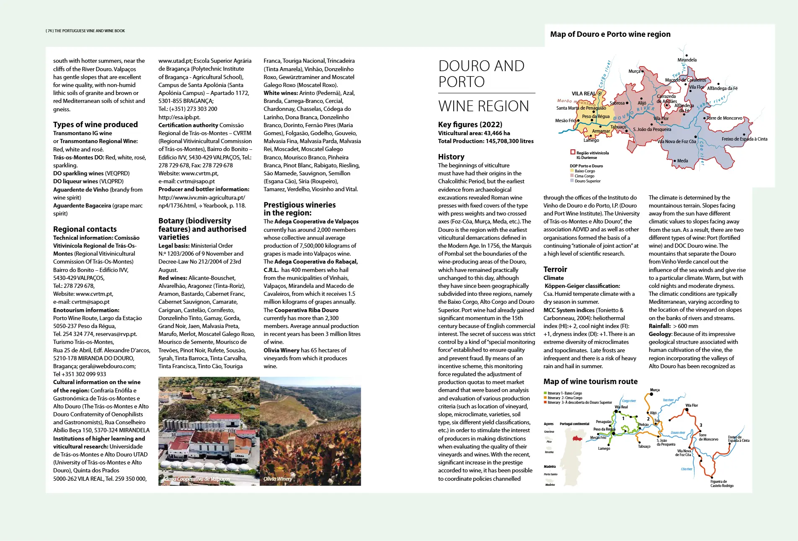
Text · Pages 74–75
south with hotter summers, near the cliffs of the River Douro. Valpaços has gentle slopes that are excellent for wine quality, with non-humid lithic soils of granite and brown or red Mediterranean soils of schist and gneiss. Types of wine produced Transmontano IG wine or Transmontano Regional Wine: Red, white and rosé. Trás-os-Montes DO: Red, white, rosé, sparkling. DO sparkling wines (VEQPRD) DO liqueur wines (VLQPRD) Aguardente de Vinho (brandy from wine spirit) Aguardente Bagaceira (grape marc spirit) Regional contacts Technical information: Comissão Vitivinícola Regional de Trás-OsMontes (Regional Vitivinicultural Commission Of Trás-Os-Montes) Bairro do Bonito – Edifício IVV, 5430-429 VALPAÇOS, Tel.: 278 729 678, Website: www.cvrtm.pt, e-mail: cvrtm@sapo.pt Enotourism information: Porto Wine Route, Largo da Estação 5050-237 Peso da Régua, Tel. 254 324 774, reservas@rvp.pt. Turismo Trás-os-Montes, Rua 25 de Abril, Edf. Alexandre D’arcos, 5210-178 MIRANDA DO DOURO, Bragança; geral@webdouro.com; Tel +351 302 099 933 Cultural information on the wine of the region: Confraria Enófila e Gastronómica de Trás-os-Montes e Alto Douro (The Trás-os-Montes e Alto Douro Confraternity of Oenophilists and Gastronomists), Rua Conselheiro Abílio Beça 150, 5370-324 MIRANDELA Institutions of higher learning and viticultural research: Universidade de Trás-os-Montes e Alto Douro UTAD (University of Trás-os-Montes e Alto Douro), Quinta dos Prados 5000-262 VILA REAL, Tel. 259 350 000,
www.utad.pt; Escola Superior Agrária de Bragança (Polytechnic Institute of Bragança - Agricultural School), Campus de Santa Apolónia (Santa Apolónia Campus) – Apartado 1172, 5301-855 BRAGANÇA; Tel.: (+351) 273 303 200 http://esa.ipb.pt. Certification authority Comissão Regional de Trás-os-Montes – CVRTM (Regional Vitivinicultural Commission of Trás-os-Montes), Bairro do Bonito – Edifício IVV, 5430-429 VALPAÇOS, Tel.: 278 729 678, Fax: 278 729 678 Website: www.cvrtm.pt, e-mail: cvrtm@sapo.pt Producer and bottler information: http://www.ivv.min-agricultura.pt/ np4/1736.html, Yearbook, p. 118. Botany (biodiversity features) and authorised varieties Legal basis: Ministerial Order N.º 1203/2006 of 9 November and Decree-Law No 212/2004 of 23rd August. Red wines: Alicante-Bouschet, Alvarelhão, Aragonez (Tinta-Roriz), Aramon, Bastardo, Cabernet Franc, Cabernet Sauvignon, Camarate, Carignan, Castelão, Cornifesto, Donzelinho Tinto, Gamay, Gorda, Grand Noir, Jaen, Malvasia Preta, Marufo, Merlot, Moscatel Galego Roxo, Mourisco de Semente, Mourisco de Trevões, Pinot Noir, Rufete, Sousão, Syrah, Tinta Barroca, Tinta Carvalha, Tinta Francisca, Tinto Cão, Touriga Adega Cooperativa de Valpaços
Franca, Touriga Nacional, Trincadeira (Tinta Amarela), Vinhão, Donzelinho Roxo, Gewürztraminer and Moscatel Galego Roxo (Moscatel Roxo). White wines: Arinto (Pedernã), Azal, Branda, Carrega-Branco, Cercial, Chardonnay, Chasselas, Códega do Larinho, Dona Branca, Donzelinho Branco, Dorinto, Fernão Pires (Maria Gomes), Folgasão, Godelho, Gouveio, Malvasia Fina, Malvasia Parda, Malvasia Rei, Moscadet, Moscatel Galego Branco, Mourisco Branco, Pinheira Branca, Pinot Blanc, Rabigato, Riesling, São Mamede, Sauvignon, Semillon (Esgana Cão), Síria (Roupeiro), Tamarez, Verdelho, Viosinho and Vital. Prestigious wineries in the region: The Adega Cooperativa de Valpaços currently has around 2,000 members whose collective annual average production of 7,500,000 kilograms of grapes is made into Valpaços wine. The Adega Cooperativa do Rabaçal, C.R.L. has 400 members who hail from the municipalities of Vinhais, Valpaços, Mirandela and Macedo de Cavaleiros, from which it receives 1.5 million kilograms of grapes annually. The Cooperativa Riba Douro currently has more than 2,300 members. Average annual production in recent years has been 3 million litres of wine. Olivia Winery has 65 hectares of vineyards from which it produces wine. Olivia Winery
Map of Douro e Porto wine region
DOURO AND PORTO WINE REGION Key figures (2022) Viticultural area: 43,466 ha Total Production: 145,708,300 litres History The beginnings of viticulture must have had their origins in the Chalcolithic Period, but the earliest evidence from archaeological excavations revealed Roman wine presses with fixed covers of the type with press weights and two crossed axes (Foz-Côa, Murça, Meda, etc.). The Douro is the region with the earliest viticultural demarcations defined in the Modern Age. In 1756, the Marquis of Pombal set the boundaries of the wine-producing areas of the Douro, which have remained practically unchanged to this day, although they have since been geographically subdivided into three regions, namely the Baixo Corgo, Alto Corgo and Douro Superior. Port wine had already gained significant momentum in the 15th century because of English commercial interest. The secret of success was strict control by a kind of “special monitoring force” established to ensure quality and prevent fraud. By means of an incentive scheme, this monitoring force regulated the adjustment of production quotas to meet market demand that were based on analysis and evaluation of various production criteria (such as location of vineyard, slope, microclimate, varieties, soil type, six different yield classifications, etc.) in order to stimulate the interest of producers in making distinctions when evaluating the quality of their vineyards and wines. With the recent, significant increase in the prestige accorded to wine, it has been possible to coordinate policies channelled
Mirandela
Corgo riv er i ver
Murça
Tua r
Macedo de Cavaleiros
VILA REAL
Marão mountain
Sabrosa
Santa Marta de Penaguião
Peso da Régua Mesão Frio
D O UR
Tabuaço
Armamar
O S.
Alijó RIV João
Vila
Carrazeda
de Anciães
ER
Alfândega da Fé
Vila Flor
da Pesqueira
Flor Sab
Alfândega da Fé or river Torre de Moncorvo
Lamego
Vila Nova de Foz Côa
Freixo de Espada à Cinta
Côa river
Região vitivinícola IG Duriense DOP Porto e Douro Baixo Corgo Cima Corgo Douro Superior
Meda
through the offices of the Instituto do Vinho de Douro e do Porto, I.P. (Douro and Port Wine Institute). The University of Trás-os-Montes e Alto Douro”, the association ADVID and as well as other organisations formed the basis of a continuing “rationale of joint action” at a high level of scientific research. Terroir Climate Köppen-Geiger classification: Csa. Humid temperate climate with a dry season in summer. MCC System indices (Tonietto & Carbonneau, 2004): heliothermal index (HI):+ 2, cool night index (FI): +1, dryness index (DI): +1. There is an extreme diversity of microclimates and topoclimates. Late frosts are infrequent and there is a risk of heavy rain and hail in summer.
The climate is determined by the mountainous terrain. Slopes facing away from the sun have different climatic values to slopes facing away from the sun. As a result, there are two different types of wine: Port (fortified wine) and DOC Douro wine. The mountains that separate the Douro from Vinho Verde cancel out the influence of the sea winds and give rise to a particular climate. Warm, but with cold nights and moderate dryness. The climatic conditions are typically Mediterranean, varying according to the location of the vineyard on slopes on the banks of rivers and streams. Rainfall: > 600 mm Geology: Because of its impressive geological structure associated with human cultivation of the vine, the region incorporating the valleys of Alto Douro has been recognized as
Map of wine tourism route
Itinerary 1- Baixo Corgo
Itinerary 2- Cima Corgo Itinerary 3- À descoberta do Douro Superior
Corgo river
Vila Real
Murça Tua river Alijó
Vila Flor
Açores Graciosa Pico Terceira
Portugal continental
Penaguião
Peso da Régua
Mesão Frio
Lamego
1 2 Pinhão Tabuaço
Tua Douro river S. João da Pesqueira Vila Nova de Foz Côa
3 Torre de Moncorvo
Freixo de Espada à Cinta
Madeira Porto Santo Madeira
Côa river
Figueira de Castelo Rodrigo
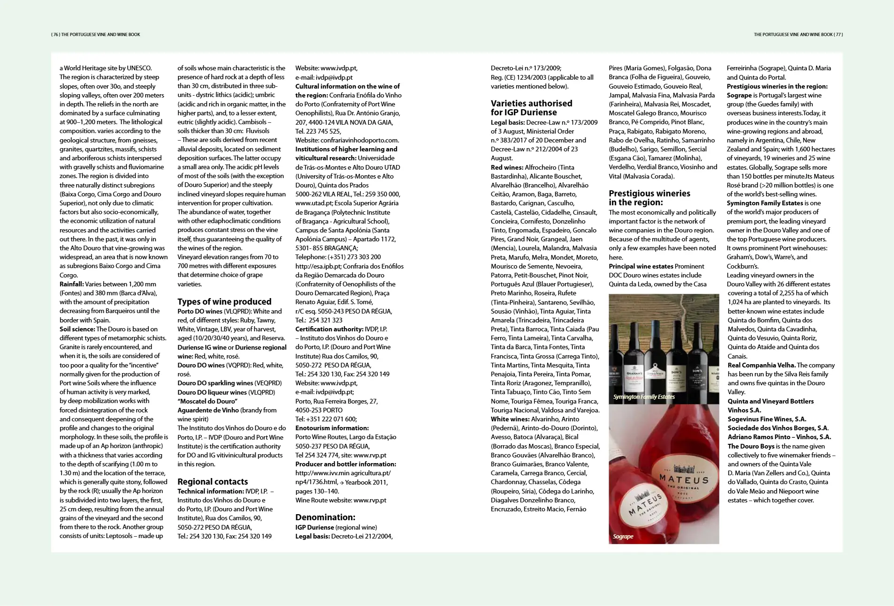
Text · Pages 76–77
a World Heritage site by UNESCO. The region is characterized by steep slopes, often over 30o, and steeply sloping valleys, often over 200 meters in depth. The reliefs in the north are dominated by a surface culminating at 900–1,200 meters. The lithological composition. varies according to the geological structure, from gneisses, granites, quartzites, massifs, schists and arboriferous schists interspersed with gravelly schists and fluviomarine zones. The region is divided into three naturally distinct subregions (Baixa Corgo, Cima Corgo and Douro Superior), not only due to climatic factors but also socio-economically, the economic utilization of natural resources and the activities carried out there. In the past, it was only in the Alto Douro that vine-growing was widespread, an area that is now known as subregions Baixo Corgo and Cima Corgo. Rainfall: Varies between 1,200 mm (Fontes) and 380 mm (Barca d’Alva), with the amount of precipitation decreasing from Barqueiros until the border with Spain. Soil science: The Douro is based on different types of metamorphic schists. Granite is rarely encountered, and when it is, the soils are considered of too poor a quality for the “incentive” normally given for the production of Port wine Soils where the influence of human activity is very marked, by deep mobilization works with forced disintegration of the rock and consequent deepening of the profile and changes to the original morphology. In these soils, the profile is made up of an Ap horizon (anthropic) with a thickness that varies according to the depth of scarifying (1.00 m to 1.30 m) and the location of the terrace, which is generally quite stony, followed by the rock (R); usually the Ap horizon is subdivided into two layers, the first, 25 cm deep, resulting from the annual grains of the vineyard and the second from there to the rock. Another group consists of units: Leptosols – made up
of soils whose main characteristic is the presence of hard rock at a depth of less than 30 cm, distributed in three subunits - dystric lithics (acidic); umbric (acidic and rich in organic matter, in the higher parts), and, to a lesser extent, eutric (slightly acidic). Cambisols – soils thicker than 30 cm: Fluvisols – These are soils derived from recent alluvial deposits, located on sediment deposition surfaces. The latter occupy a small area only. The acidic pH levels of most of the soils (with the exception of Douro Superior) and the steeply inclined vineyard slopes require human intervention for proper cultivation. The abundance of water, together with other edaphoclimatic conditions produces constant stress on the vine itself, thus guaranteeing the quality of the wines of the region. Vineyard elevation ranges from 70 to 700 metres with different exposures that determine choice of grape varieties. Types of wine produced Porto DO wines (VLQPRD): White and red, of different styles: Ruby, Tawny, White, Vintage, LBV, year of harvest, aged (10/20/30/40 years), and Reserva. Duriense IG wine or Duriense regional wine: Red, white, rosé. Douro DO wines (VQPRD): Red, white, rosé. Douro DO sparkling wines (VEQPRD) Douro DO liqueur wines (VLQPRD) “Moscatel do Douro” Aguardente de Vinho (brandy from wine spirit) The Instituto dos Vinhos do Douro e do Porto, I.P. – IVDP (Douro and Port Wine Institute) is the certification authority for DO and IG vitivinicultural products in this region. Regional contacts Technical information: IVDP, I.P. – Instituto dos Vinhos do Douro e do Porto, I.P. (Douro and Port Wine Institute), Rua dos Camilos, 90, 5050-272 PESO DA RÉGUA, Tel.: 254 320 130, Fax: 254 320 149
Website: www.ivdp.pt, e-mail: ivdp@ivdp.pt Cultural information on the wine of the region: Confraria Enófila do Vinho do Porto (Confraternity of Port Wine Oenophilists), Rua Dr. António Granjo, 207, 4400-124 VILA NOVA DA GAIA, Tel. 223 745 525, Website: confrariavinhodoporto.com. Institutions of higher learning and viticultural research: Universidade de Trás-os-Montes e Alto Douro UTAD (University of Trás-os-Montes e Alto Douro), Quinta dos Prados 5000-262 VILA REAL, Tel.: 259 350 000, www.utad.pt; Escola Superior Agrária de Bragança (Polytechnic Institute of Bragança - Agricultural School), Campus de Santa Apolónia (Santa Apolónia Campus) – Apartado 1172, 5301- 855 BRAGANÇA; Telephone: (+351) 273 303 200 http://esa.ipb.pt; Confraria dos Enófilos da Região Demarcada do Douro (Confraternity of Oenophilists of the Douro Demarcated Region), Praça Renato Aguiar, Edif. S. Tomé, r/C esq. 5050-243 PESO DA RÉGUA, Tel.: 254 321 323 Certification authority: IVDP, I.P. – Instituto dos Vinhos do Douro e do Porto, I.P. (Douro and Port Wine Institute) Rua dos Camilos, 90, 5050-272 PESO DA RÉGUA, Tel.: 254 320 130, Fax: 254 320 149 Website: www.ivdp.pt, e-mail: ivdp@ivdp.pt; Porto, Rua Ferreira Borges, 27, 4050-253 PORTO Tel: +351 222 071 600; Enotourism information: Porto Wine Routes, Largo da Estação 5050-237 PESO DA RÉGUA, Tel 254 324 774, site: www.rvp.pt Producer and bottler information: http://www.ivv.min agricultura.pt/ np4/1736.html, Yearbook 2011, pages 130–140. Wine Route website: www.rvp.pt Denomination: IGP Duriense (regional wine) Legal basis: Decreto-Lei 212/2004,
Decreto-Lei n.º 173/2009; Reg. (CE) 1234/2003 (applicable to all varieties mentioned below). Varieties authorised for IGP Duriense Legal basis: Decree-Law n.º 173/2009 of 3 August, Ministerial Order n.º 383/2017 of 20 December and Decree-Law n.º 212/2004 of 23 August. Red wines: Alfrocheiro (Tinta Bastardinha), Alicante Bouschet, Alvarelhão (Brancelho), Alvarelhão Ceitão, Aramon, Baga, Barreto, Bastardo, Carignan, Casculho, Castelã, Castelão, Cidadelhe, Cinsault, Concieira, Cornifesto, Donzelinho Tinto, Engomada, Espadeiro, Goncalo Pires, Grand Noir, Grangeal, Jaen (Mencia), Lourela, Malandra, Malvasia Preta, Marufo, Melra, Mondet, Moreto, Mourisco de Semente, Nevoeira, Patorra, Petit-Bouschet, Pinot Noir, Português Azul (Blauer Portugieser), Preto Marinho, Roseira, Rufete (Tinta-Pinheira), Santareno, Sevilhão, Sousão (Vinhão), Tinta Aguiar, Tinta Amarela (Trincadeira, Trincadeira Preta), Tinta Barroca, Tinta Caiada (Pau Ferro, Tinta Lameira), Tinta Carvalha, Tinta da Barca, Tinta Fontes, Tinta Francisca, Tinta Grossa (Carrega Tinto), Tinta Martins, Tinta Mesquita, Tinta Penajoia, Tinta Pereira, Tinta Pomar, Tinta Roriz (Aragonez, Tempranillo), Tinta Tabuaço, Tinto Cão, Tinto Sem Nome, Touriga Fêmea, Touriga Franca, Touriga Nacional, Valdosa and Varejoa. White wines: Alvarinho, Arinto (Pedernã), Arinto-do-Douro (Dorinto), Avesso, Batoca (Alvaraça), Bical (Borrado das Moscas), Branco Especial, Branco Gouvães (Alvarelhão Branco), Branco Guimarães, Branco Valente, Caramela, Carrega Branco, Cercial, Chardonnay, Chasselas, Côdega (Roupeiro, Síria), Côdega do Larinho, Diagalves Donzelinho Branco, Encruzado, Estreito Macio, Fernão
Pires (Maria Gomes), Folgasão, Dona Branca (Folha de Figueira), Gouveio, Gouveio Estimado, Gouveio Real, Jampal, Malvasia Fina, Malvasia Parda (Farinheira), Malvasia Rei, Moscadet, Moscatel Galego Branco, Mourisco Branco, Pé Comprido, Pinot Blanc, Praça, Rabigato, Rabigato Moreno, Rabo de Ovelha, Ratinho, Samarrinho (Budelho), Sarigo, Semillon, Sercial (Esgana Cão), Tamarez (Molinha), Verdelho, Verdial Branco, Viosinho and Vital (Malvasia Corada). Prestigious wineries in the region: The most economically and politically important factor is the network of wine companies in the Douro region. Because of the multitude of agents, only a few examples have been noted here. Principal wine estates Prominent DOC Douro wines estates include Quinta da Leda, owned by the Casa Symington Family Estates
Ferreirinha (Sogrape), Quinta D. Maria and Quinta do Portal. Prestigious wineries in the region: Sogrape is Portugal’s largest wine group (the Guedes family) with overseas business interests.Today, it produces wine in the country’s main wine-growing regions and abroad, namely in Argentina, Chile, New Zealand and Spain; with 1,600 hectares of vineyards, 19 wineries and 25 wine estates. Globally, Sogrape sells more than 150 bottles per minute.Its Mateus Rosé brand (>20 million bottles) is one of the world’s best-selling wines. Symington Family Estates is one of the world’s major producers of premium port, the leading vineyard owner in the Douro Valley and one of the top Portuguese wine producers. It owns prominent Port winehouses: Graham’s, Dow’s, Warre’s, and Cockburn’s. Leading vineyard owners in the Douro Valley with 26 different estates covering a total of 2,255 ha of which 1,024 ha are planted to vineyards. Its better-known wine estates include Quinta do Bomfim, Quinta dos Malvedos, Quinta da Cavadinha, Quinta do Vesuvio, Quinta Roriz, Quinta do Ataíde and Quinta dos Canais. Real Companhia Velha. The company has been run by the Silva Reis family and owns five quintas in the Douro Valley. Quinta and Vineyard Bottlers Vinhos S.A. Sogevinus Fine Wines, S.A. Sociedade dos Vinhos Borges, S.A. Adriano Ramos Pinto – Vinhos, S.A. The Douro Boys is the name given collectively to five winemaker friends – and owners of the Quinta Vale D. Maria (Van Zellers and Co.), Quinta do Vallado, Quinta do Crasto, Quinta do Vale Meão and Niepoort wine estates – which together cover.
Sogrape
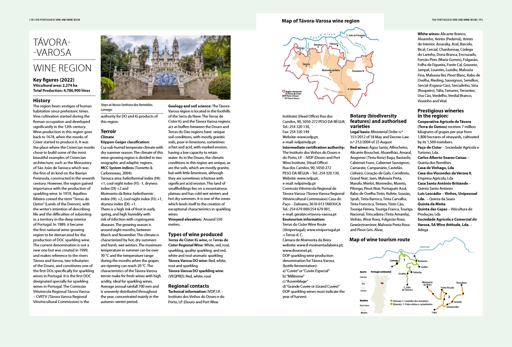
Text · Pages 78–79
TÁVORA-VAROSA
officially appointed certification
WINE REGION
Key figures (2022) Viticultural area: 2,274 ha Total Production: 4,786,900 litres
History The region bears vestiges of human habitation since prehistoric times. Vine cultivation started during the Roman occupation and developed significantly in the 12th century. Wine production in this region goes back to 1678, when the monks of Cister started to produce it. It was the place where the Cistercian monks chose to build some of the most beautiful examples of Cistercian architecture, such as the Monastery of São João de Tarouca which was the first of its kind on the Iberian Peninsula, constructed in the seventh century. However, the region gained importance with the production of sparkling wine. In 1919, Aquilino Ribeiro coined the term “Terras do Demo” (Lands of the Demon), with the writer’s intention of describing life and the difficulties of subsisting in a territory in the deep interior of Portugal. In 1989, it became the first national wine-growing region to be demarcated for the production of DOC sparkling wine. The current denomination is not a new one but was created in 1999, and makes reference to the rivers Távora and Varosa, two tributaries of the Douro, and constitutes one of the first DOs specifically for sparkling wines in Portugal. It is the first DOC designated specially for sparkling wines in Portugal. The Comissão Vitivinícola Regional Távora Varosa – CVRTV (Távora Varosa Regional Vitivinicultural Commission) is the
Steps at Nossa Senhora dos Remédios. Lamego authority for DO and IG products of this region. Terroir Climate Köppen-Geiger classification: Csa sub-humid temperate climate with dry summer season. The climate of this wine-growing region is divided in two orographic and edaphic regions. MCC System indices (Tonietto & Carbonneau, 2004): Tarouca area: heliothermal index (HI): +1, cool night index (FI): -1, dryness index (DI) +2 and Moimento da Beira: heliothermic index (HI): +2, cool night index (FI): +1, dryness index (DI): +1. There is a high risk of frost in early spring, and high humidity with risk of infection with cryptogamic diseases. The growing season is around eight months, between March and November. The climate is characterized by hot, dry summers and harsh, wet winters. The maximum temperature in summer can be over 30 °C and the temperature range during the months when the grapes are ripening can reach 20 °C. The characteristics of the Távora-Varosa terroir make for fresh wines with high acidity, ideal for sparkling wines. Average annual rainfall 700 mm and is unevenly distributed throughout the year, concentrated mainly in the autumn–winter period.
Geology and soil science: The TávoraVarosa region is located in the foothills of the Serra da Nave. The Terras de Cister IG and the Távora Varosa regions act as buffers between the Douro and Terras do Dão regions have unique soil conditions, with mostly granitic soils, poor in limestone, sometimes schist and acid, with marked erosion, having a low capacity to retain water. As in the Douro, the climatic conditions in this region are unique, as are the soils, which are mostly granite, but with little limestone, although they are sometimes schistose with significant acid erosion. This land of smallholdings lies on a mountainous plateau and has cold wet winters and hot dry summers. It is one of the zones which lends itself to the creation of exceptional characteristics in sparkling wines Vineyard elevation: Around 550 metres. Types of wine produced Terras de Cister IG wine, or Terras de Cister Regional Wine: White, red, rosé, sparkling, quality sparkling, and red, white and rosé aromatic sparkling Távora-Varosa DO wine: Red, white, rosé and sparkling Távora-Varosa DO sparkling wine (VEQPRD): Red, white, rosé Regional contacts Technical information: IVDP, I.P. – Instituto dos Vinhos do Douro e do Porto, I.P. (Douro and Port Wine
Map of Távora-Varosa wine region
Lamego
O RIVER DOU R
Armamar
Tabuaço
Távo
S. João da Pesqueira
ra
Torto r
Varosa ri ver
river
Tarouca Moimenta da Beira Leomil mountain
Penodono
Região vitivinícola IG Terras de Cister DOP Porto e Douro DO Távora-Varosa
Lapa mountain
Sernancelhe
iver
White wines: Alicante Branco, Alvarinho, Arinto (Pedernã), Arinto do Interior, Assaraky, Azal, Barcelo, Bical, Cercial, Chardonnay, Códega do Larinho, Dona Branca, Encruzado, Fernão Pires (Maria Gomes), Folgasão, Folha de Figueira, Fonte Cal, Gouveio, Jampal, Loureiro, Luzidio, Malvasia Fina, Malvasia Rei, Pinot Blanc, Rabo de Ovelha, Riesling, Sauvignon, Semillon, Sercial (Esgana-Cão), Sercialinho, Síria (Roupeiro), Tália, Tamarez, Terrantez, Uva Cão, Verdelho, Verdial Branco, Viosinho and Vital.
Institute) (Head Office) Rua dos Camilos, 90, 5050-272 PESO DA RÉGUA Tel.: 254 320 130, Fax: 254 320 149 Website: www.ivdp.pt, e-mail: ivdp@ivdp.pt Intermediate certification authority: The Instituto dos Vinhos do Douro e do Porto, I.P. – IVDP (Douro and Port Wine Institute, (Head Office) Rua dos Camilos, 90, 5050-272 PESO DA RÉGUA – Tel.: 254 320 130, Website: www.ivdp.pt, e-mail: ivdp@ivdp.pt Comissão Vitivinícola Regional de Távora-Varosa (Távora-Varosa Regional Vitivinicultural Commission) Casa do Paço – Dalvares; 3610-013 TAROUCA Tel.: 254 679 000/254 679 001, e-mail: geral@cvrtavora-varosa.pt Enotourism information: Terras do Cister Wine Route (Viniportugal); www.viniportugal.pt Terras d. C. Câmara de Moimenta da Beira website: www.if-moimentadabeira.pt; www.douronet.pt; DOP sparkling wine production denomination for Távora-Varosa, (bottle fermentation): a) “Cuvée” or “Cuvée Especial” b) “Millésime” c) “Assemblage” d) “Grande Cuvée or (Grand Cuvée)” DOP sparkling wines must indicate the year of harvest.
Botany (biodiversity features) and authorised varieties Legal basis: Ministerial Order n.º 151/2012 of 18 May and Decree-Law n.º 212/2004 of 23 August Red wines: Água Santa, Alfrocheiro, Alicante Bouschet, Alvarelhão, Amaral, Aragonez (Tinta Roriz) Baga, Bastardo, Cabernet Franc, Cabernet Sauvignon, Camarate, Campanário, Castelão, Cidreiro, Coração de Galo, Cornifesto, Grand Noir, Jaen, Malvasia Preta, Marufo, Merlot, Monvedro, Moreto, Pilongo, Pinot Noir, Português Azul, Rabo de Ovelha Tinto, Rufete, Sousão, Syrah, Tinta Barroca, Tinta Carvalha, Tinta Francisca, Tintem, Tinto Cão, Touriga Fêmea, Touriga Franca, Touriga Nacional, Trincadeira (Tinta Amarela), Vinhão, Alvar Roxo, Folgasão Roxo, Gewürztraminer, Malvasia Preta Roxa and Pinot Gris. Alvar,
Prestigious wineries in the region: Cooperativa Agrícola de Távora (Terra do Demos) receives 7 million kilograms of grapes per year from 1,800 hectares of vineyards, cultivated by its 1,500 members. Paço de Cister – Sociedade Agrícola e Turismo, Lda. Carlos Alberto Soares Caixas – Quinta dos Romilões Casa de Vinhago, Lda Casa dos Viscondes da Várzea II, Empresa Agrícola, Lda Casa Santo António Britiande – Quinta Santo António Luís Leocádio – Vinhos, Unipessoal Lda. – Quinta da Seara Quinta da Moita Quinta das Cepas – Viticultura de Produção, Lda Sociedade Agrícola e Comercial do Varosa, SA Wine Attitude, Lda. – Adega
Map of wine tourism route
Douro river
Açores Graciosa Pico Terceira
Lamego 1
Armamar Godim
Portugal continental
Ucanha Salzedas
S. João de Tarouca
Moimenta da Beira
Madeira Porto Santo Madeira
Itinerary 1- Caminho dos mosteiros Itinerary 2- Entre vinhas e castanheiros Lapa
Penodono Fonte Arcada
2
Sarzeda
Sernancelhe
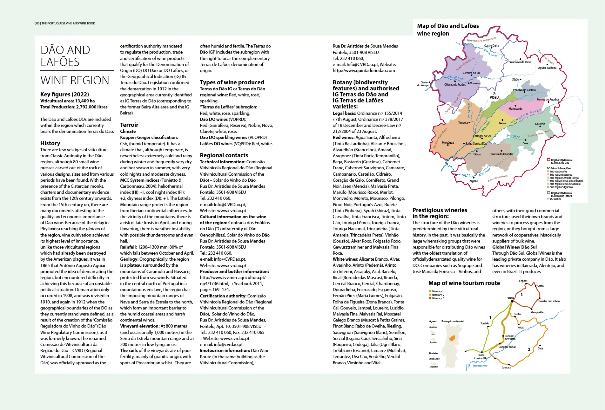
Text · Pages 80–81
DÃO AND LAFÕES WINE REGION Key figures (2022) Viticultural area: 13,409 ha Total Production: 2,792,000 litres The Dão and Lafões DOs are included within the region which currently bears the denomination Terras do Dão. History There are few vestiges of viticulture from Classic Antiquity in the Dão region, although 80 small wine presses carved out of the rock of various designs, sizes and from various periods have been found. With the presence of the Cistercian monks, charters and documentary evidence exists from the 12th century onwards. From the 15th century on, there are many documents attesting to the quality and economic importance of Dao wine. Because of the delay in Phylloxera reaching the plateau of the region, vine cultivation achieved its highest level of importance, unlike those viticultural regions which had already been destroyed by the American plagues. It was in 1865 that António Augusto Aguiar promoted the idea of demarcating the region, but encountered difficulty in achieving this because of an unstable political situation. Demarcation only occurred in 1908, and was revised in 1910, and again in 1912 when the geographical boundaries of the DO as they currently stand were defined, as a result of the creation of the “Comissão Reguladora do Vinho do Dão” (Dão Wine Regulatory Commission), as it was formerly known. The renamed Comissão de Vitivinicultura da Região do Dão – CVRD (Regional Vitivinicultural Commission of the Dão) was officially approved as the
certification authority mandated to regulate the production, trade and certification of wine products that qualify for the Denomination of Origin (DO) DO Dão or DO Lafões, or the Geographical Indication (IG) IG Terras do Dão. Legislation confirmed the demarcation in 1912 in the geographical area currently identified as IG Terras do Dão (corresponding to the former Beira Alta area and the IG Beiras) Terroir Climate Köppen-Geiger classification: Csb, (humid temperate). It has a climate that, although temperate, is nevertheless extremely cold and rainy during winter and frequently very dry and hot season in summer, with very cold nights and moderate dryness. MCC System indices (Tonietto & Carbonneau, 2004): heliothermal index (HI): -1, cool night index (FI): +2, dryness index (DI): +1. The Estrela Mountain range protects the region from Iberian continental influences. In the vicinity of the mountains, there is a risk of late frosts in April, and during flowering, there is weather instability with possible thunderstorms and even hail. Rainfall: 1200–1300 mm; 80% of which falls between October and April. Geology: Orographically, the region is a plateau surrounded by the mountains of Caramulo and Bussaco, protected from sea winds. Situated in the central north of Portugal in a mountainous enclave, the region has the imposing mountain ranges of Nave and Serra da Estrela to the north, which form an important barrier to the humid coastal areas and harsh continental winds. Vineyard elevation: At 800 metres (and occasionally 1,000 metres) in the Serra da Estrela mountain range and at 200 metres in low-lying areas. The soils of the vineyards are of poor fertility, mainly of granitic origin, with spots of Precambrian schist. They are
often humid and fertile. The Terras do Dão IGP includes the subregion with the right to bear the complementary Terras de Lafões denomination of origin. Types of wine produced Terras do Dão IG or Terras do Dão regional wine: Red, white, rosé, sparkling. “Terras de Lafões” subregion: Red, white, rosé, sparkling. Dão DO wines (VQPRD): Red (Garrafeira, Reserva), Nobre, Novo, Clarete, white, rosé. Dão DO sparkling wines (VEQPRD) Lafões DO wines (VQPRD): Red, white. Regional contacts Technical information: Comissão Vitivinícola Regional do Dão (Regional Vitivinicultural Commission of the Dão) – Solar do Vinho do Dão, Rua Dr. Aristides de Sousa Mendes Fontelo, 3501-908 VISEU Tel. 232 410 060, e-mail: Info@CVRDao.pt, Website: www.cvrdao.pt Cultural information on the wine of the region: Confraria dos Enófilos do Dão (“Confraternity of Dão Oenophilists), Solar do Vinho do Dão, Rua Dr. Aristides de Sousa Mendes Fontelo, 3501-908 VISEU Tel.: 232 410 060, e-mail: Info@CVRDao.pt, Website: www.cvrdao.pt Producer and bottler information: http://www.ivv.min-agricultura.pt/ np4/1736.html, Yearbook 2011, pages 169–174. Certification authority: Comissão Vitivinícola Regional do Dão (Regional Vitivinicultural Commission of the Dão), Solar do Vinho do Dão, Rua Dr. Aristides de Sousa Mendes, Fontelo, Apt. 10, 3501-908 VISEU – Tel.: 232 410 060, Fax: 232 410 065 – Website: www.cvrdao.pt – e-mail: info@cvrdao.pt Enotourism information: Dão Wine Route (in the same building as the Vitivinicultural Commission),
Rua Dr. Aristides de Sousa Mendes Fontelo, 3501-908 VISEU Tel. 232 410 060, e-mail: Info@CVRDao.pt, Website: http://www.quintadoriodao.com Botany (biodiversity features) and authorised IG Terras do Dão and IG Terras de Lafões varieties: Legal basis: Ordinance n.º 155/2014 / 7th August, Ordinance n.º 378/2017 of 18 December and Decree-Law n.º 212/2004 of 23 August. Red wines: Água Santa, Alfrocheiro (Tinta Bastardinha), Alicante Bouschet, Alvarelhão (Brancelho), Amaral, Aragonez (Tinta Roriz, Tempranillo), Baga, Bastardo (Graciosa), Cabernet Franc, Cabernet Sauvignon, Camarate, Campanário, Castelão, Cidreiro, Coração de Galo, Cornifesto, Grand Noir, Jaen (Mencia), Malvasia Preta, Marufo (Mourisco Roxo), Merlot, Monvedro, Moreto, Mourisco, Pilongo, Pinot Noir, Português Azul, Rufete (Tinta Pinheira), Syrah (Shiraz), Tinta Carvalha, Tinta Francisca, Tintem, Tinto Cão, Touriga Fêmea, Touriga Franca, Touriga Nacional, Trincadeira (Tinta Amarela, Trincadeira Preta), Vinhão (Sousão), Alvar Roxo, Folgasão Roxo, Gewürztraminer and Malvasia Fina Roxa. White wines: Alicante Branco, Alvar, Alvarinho, Arinto (Pedernã), Arinto do Interior, Assaraky, Azal, Barcelo, Bical (Borrado das Moscas), Branda, Cerceal Branco, Cercial, Chardonnay, Douradinha, Encruzado, Esganoso, Fernão Pires (Maria Gomes), Folgasão, Folha de Figueira (Dona Branca), Fonte Cal, Gouveio, Jampal, Loureiro, Luzidio, Malvasia Fina, Malvasia Rei, Moscatel Galego Branco (Muscat à Petits Grains), Pinot Blanc, Rabo de Ovelha, Riesling, Sauvignon (Sauvignon Blanc), Semillon, Sercial (Esgana Cão), Sercialinho, Síria (Roupeiro, Códega), Tália (Ugni Blanc, Trebbiano Toscano), Tamarez (Molinha), Terrantez, Uva Cão, Verdelho, Verdial Branco, Viosinho and Vital.
Map of Dão and Lafões
wine region
Montemuro mountain
Sever do Vouga
rada mountain
A
S. Pedro do Sul
Vou ga ri ver
Oliveira de Frades
Vouzela
Castro Daire Pai river
Lapa va
Vila Nova de Paiva
m
o
un
t
a
i
n
Aguiar da Beira
Sátão
Caramulo mountain
n Mortágua
VISEU
Penalva do Castelo Fornos de Agodres
Dinha river Dão river Asnes river
Tondela
Nelas
Mangualde MON DEGO
RIVE R Gouveia
Carregal do Sal Santa Comba Dão
Seia river
Estrela mountain Seia
Buçaco mountai
Tábua
Oliveira do Hospital
Região vitivinícola IG Terras do Dão
Arganil
Alva
river Açor mountain
DO Dão– Sub-regiões Sub-região Alva Sub-região Besteiros Sub-região Serra da Estrela Sub-região Terras de Senhorim Sub-região Terras de Azurara Sub-região Silgueiros Região vitivinícola IG Terras de Lafões DO Lafões
Prestigious wineries in the region: The structure of the Dão wineries is predetermined by their viticultural history. In the past, it was basically the large winemaking groups that were responsible for distributing Dão wines with the oldest translation of officiallydemarcated quality wine for DO. Companies such as Sogrape and José Maria da Fonseca – Vinhos, and
others, with their good commercial structure, used their own brands and wineries to process grapes from the region, or they bought from a large network of cooperatives, historically suppliers of bulk wine. Global Wines/ Dão Sul Through Dão Sul, Global Wines is the leading private company in Dão. It also has wineries in Bairrada, Alentejo, and even in Brazil. It produces
Map of wine tourism route Itinerary 1 Itinerary 2 Itinerary 3
Cepões 3 Viseu
Sátão Penalva do Castelo
Açores Graciosa
Portugal continental
1 Tondela
Santar Nelas
Mangualde
Pico Terceira Madeira Porto Santo Madeira
Cabanas de Viriato
Carregal do Sal
Santa
Comba Dão
Mondego river
Lourosa
2
Seia
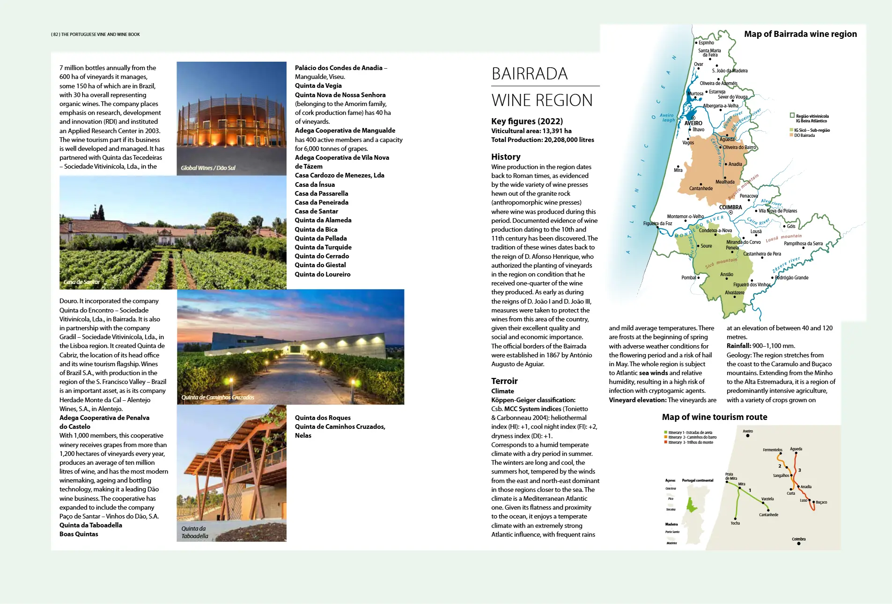
Text · Pages 82–83
7 million bottles annually from the 600 ha of vineyards it manages, some 150 ha of which are in Brazil, with 30 ha overall representing organic wines. The company places emphasis on research, development and innovation (RDI) and instituted an Applied Research Center in 2003. The wine tourism part if its business is well developed and managed. It has partnered with Quinta das Tecedeiras – Sociedade Vitivinícola, Lda., in the
Global Wines / Dão Sul
Casa de Santar
Douro. It incorporated the company Quinta do Encontro – Sociedade Vitivinícola, Lda., in Bairrada. It is also in partnership with the company Gradil – Sociedade Vitivinícola, Lda., in the Lisboa region. It created Quinta de Cabriz, the location of its head office and its wine tourism flagship. Wines of Brazil S.A., with production in the region of the S. Francisco Valley – Brazil is an important asset, as is its company Herdade Monte da Cal – Alentejo Wines, S.A., in Alentejo. Adega Cooperativa de Penalva do Castelo With 1,000 members, this cooperative winery receives grapes from more than 1,200 hectares of vineyards every year, produces an average of ten million litres of wine, and has the most modern winemaking, ageing and bottling technology, making it a leading Dão wine business. The cooperative has expanded to include the company Paço de Santar – Vinhos do Dão, S.A. Quinta da Taboadella Boas Quintas
Quinta de Caminhos Cruzados Quinta da Taboadella
Palácio dos Condes de Anadia – Mangualde, Viseu. Quinta da Vegia Quinta Nova de Nossa Senhora (belonging to the Amorim family, of cork production fame) has 40 ha of vineyards. Adega Cooperativa de Mangualde has 400 active members and a capacity for 6,000 tonnes of grapes. Adega Cooperativa de Vila Nova de Tázem Casa Cardozo de Menezes, Lda Casa da Ínsua Casa da Passarella Casa da Peneirada Casa de Santar Quinta da Alameda Quinta da Bica Quinta da Pellada Quinta da Turquide Quinta do Cerrado Quinta do Giestal Quinta do Loureiro Quinta dos Roques Quinta de Caminhos Cruzados, Nelas
BAIRRADA WINE REGION Key figures (2022) Viticultural area: 13,391 ha Total Production: 20,208,000 litres History Wine production in the region dates back to Roman times, as evidenced by the wide variety of wine presses hewn out of the granite rock (anthropomorphic wine presses) where wine was produced during this period. Documented evidence of wine production dating to the 10th and 11th century has been discovered. The tradition of these wines dates back to the reign of D. Afonso Henrique, who authorized the planting of vineyards in the region on condition that he received one-quarter of the wine they produced. As early as during the reigns of D. João I and D. João III, measures were taken to protect the wines from this area of the country, given their excellent quality and social and economic importance. The official borders of the Bairrada were established in 1867 by António Augusto de Aguiar. Terroir Climate Köppen-Geiger classification: Csb. MCC System indices (Tonietto & Carbonneau 2004): heliothermal index (HI): +1, cool night index (FI): +2, dryness index (DI): +1. Corresponds to a humid temperate climate with a dry period in summer. The winters are long and cool, the summers hot, tempered by the winds from the east and north-east dominant in those regions closer to the sea. The climate is a Mediterranean Atlantic one. Given its flatness and proximity to the ocean, it enjoys a temperate climate with an extremely strong Atlantic influence, with frequent rains
I
O C E A N
Aveiro laugh
MaTHpE POoRfTUBGUaESiErVrINaE dANaD WwINEinBOeOKr{ 8e3g} ion
Espinho
Santa Maria da Feira
Ovar
S. João da Madeira
Oliveira de Azeméis
Murtosa
Estarreja Sever
do
Vouga
Albergaria-a-Velha
AVEIRO
a
river qu
e
i
r
o
river
Voug Alfus
Ílhavo
Vagos
Águeda Oliveira do Bairro
Região vitivinícola IG Beira Atlãntico IG Sicó – Sub-região DO Bairrada
C
Cértima river
Anadia
Mira
Cantanhede
Mealhada Buça
co mountain Penacova
Alva
riv
COIMBRA
Vila Nova
er de
Poiares
Figueira
da
FMozonMtemO oNr-oD-VEeGlhCOoondReIixVa-Ea-RNova
C
Miranda do
eira R Lousã Corvo
i
v
er Lo
u
s
ã
Soure
Penela
Góis mountain Pampilhosa da Serra
Soure river
Castanheira de Pera
Pombal
Sicó mountain Ansião
Zêzere river
Pedrógão Grande
Figueiró dos Vinhos
Alvaiázere
T
N
A
L
T
A
and mild average temperatures. There are frosts at the beginning of spring with adverse weather conditions for the flowering period and a risk of hail in May. The whole region is subject to Atlantic sea winds and relative humidity, resulting in a high risk of infection with cryptogamic agents. Vineyard elevation: The vineyards are
at an elevation of between 40 and 120 metres. Rainfall: 900–1,100 mm. Geology: The region stretches from the coast to the Caramulo and Buçaco mountains. Extending from the Minho to the Alta Estremadura, it is a region of predominantly intensive agriculture, with a variety of crops grown on
Map of wine tourism route
Itinerary 1- Estradas de areia Itinerary 2- Caminhos do barro Itinerary 3- Trilhos do monte
Aveiro
Fermentelos Águeda
Açores Graciosa
Portugal continental
Pico
Terceira
Madeira Porto Santo Madeira
Praia
de Mira
Mira
1
Tocha
2 3 Sangalhos
Varziela Cantanhede
Anadia Curia Luso Buçaco
Coimbra
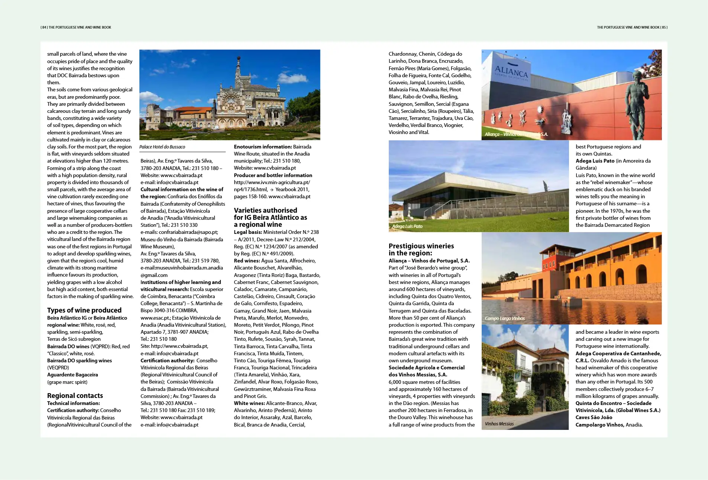
Text · Pages 84–85
small parcels of land, where the vine occupies pride of place and the quality of its wines justifies the recognition that DOC Bairrada bestows upon them. The soils come from various geological eras, but are predominantly poor. They are primarily divided between calcareous clay terrain and long sandy bands, constituting a wide variety of soil types, depending on which element is predominant. Vines are cultivated mainly in clay or calcareous clay soils. For the most part, the region is flat, with vineyards seldom situated at elevations higher than 120 metres. Forming of a strip along the coast with a high population density, rural property is divided into thousands of small parcels, with the average area of vine cultivation rarely exceeding one hectare of vines, thus favouring the presence of large cooperative cellars and large winemaking companies as well as a number of producers-bottlers who are a credit to the region. The viticultural land of the Bairrada region was one of the first regions in Portugal to adopt and develop sparkling wines, given that the region’s cool, humid climate with its strong maritime influence favours its production, yielding grapes with a low alcohol but high acid content, both essential factors in the making of sparkling wine. Types of wine produced Beira Atlântico IG or Beira Atlântico regional wine: White, rosé, red, sparkling, semi-sparkling, Terras de Sicó subregion Bairrada DO wines (VQPRD): Red, red “Classico”, white, rosé. Bairrada DO sparkling wines (VEQPRD) Aguardente Bagaceira (grape marc spirit) Regional contacts Technical information: Certification authority: Conselho Vitivinícola Regional das Beiras (RegionalVitivinicultural Council of the
Palace Hotel do Bussaco Beiras), Av. Eng.º Tavares da Silva, 3780-203 ANADIA, Tel.: 231 510 180 – Website: www.cvbairrada.pt e-mail: info@cvbairrada.pt Cultural information on the wine of the region: Confraria dos Enófílos da Bairrada (Confraternity of Oenophilists of Bairrada), Estação Vitivinícola de Anadia (“Anadia Vitivinicultural Station”), Tel.: 231 510 330 e-mails: confrariabairrada@sapo.pt; Museu do Vinho da Bairrada (Bairrada Wine Museum), Av. Eng.º Tavares da Silva, 3780-203 ANADIA, Tel.: 231 519 780, e-mail:museuvinhobairrada.m.anadia @gmail.com Institutions of higher learning and viticultural research: Escola superior de Coimbra, Benacanta (“Coimbra College, Benacanta”) – S. Martinha de Bispo 3040-316 COIMBRA, www.esac.pt.; Estação Vitivinícola de Anadia (Anadia Vitivinicultural Station), Apartado 7, 3781-907 ANADIA; Tel.: 231 510 180 Site: http://www.cvbairrada.pt, e-mail: info@cvbairrada.pt Certification authority: Conselho Vitivinícola Regional das Beiras (Regional Vitivinicultural Council of the Beiras); Comissão Vitivinícola da Bairrada (Bairrada Vitivinicultural Commission) ; Av. Eng.º Tavares da Silva, 3780-203 ANADIA – Tel.: 231 510 180 Fax: 231 510 189; Website: www.cvbairrada.pt e-mail: info@cvbairrada.pt
Enotourism information: Bairrada Wine Route, situated in the Anadia municipality; Tel.: 231 510 180, Website: www.cvbairrada.pt Producer and bottler information http://www.ivv.min-agricultura.pt/ np4/1736.html, Yearbook 2011, pages 158-160. www.cvbairrada.pt Varieties authorised for IG Beira Atlântico as a regional wine Legal basis: Ministerial Order N.º 238 – A/2011, Decree-Law N.º 212/2004, Reg. (EC) N.º 1234/2007 (as amended by Reg. (EC) N.º 491/2009). Red wines: Água Santa, Alfrocheiro, Alicante Bouschet, Alvarelhão, Aragonez (Tinta Roriz) Baga, Bastardo, Cabernet Franc, Cabernet Sauvignon, Caladoc, Camarate, Campanário, Castelão, Cidreiro, Cinsault, Coração de Galo, Cornifesto, Espadeiro, Gamay, Grand Noir, Jaen, Malvasia Preta, Marufo, Merlot, Monvedro, Moreto, Petit Verdot, Pilongo, Pinot Noir, Português Azul, Rabo de Ovelha Tinto, Rufete, Sousão, Syrah, Tannat, Tinta Barroca, Tinta Carvalha, Tinta Francisca, Tinta Muída, Tintem, Tinto Cão, Touriga Fêmea, Touriga Franca, Touriga Nacional, Trincadeira (Tinta Amarela), Vinhão, Xara, Zinfandel, Alvar Roxo, Folgasão Roxo, Gewürztraminer, Malvasia Fina Roxa and Pinot Gris. White wines: Alicante-Branco, Alvar, Alvarinho, Arinto (Pedernã), Arinto do Interior, Assaraky, Azal, Barcelo, Bical, Branca de Anadia, Cercial,
Chardonnay, Chenin, Códega do Larinho, Dona Branca, Encruzado, Fernão Pires (Maria Gomes), Folgasão, Folha de Figueira, Fonte Cal, Godelho, Gouveio, Jampal, Loureiro, Luzidio, Malvasia Fina, Malvasia Rei, Pinot Blanc, Rabo de Ovelha, Riesling, Sauvignon, Semillon, Sercial (Esgana Cão), Sercialinho, Síria (Roupeiro), Tália, Tamarez, Terrantez, Trajadura, Uva Cão, Verdelho, Verdial Branco, Viognier, Viosinho and Vital.
Aliança – Vinhos de Portugal, S.A.
Adega Luis Pato
Prestigious wineries in the region: Aliança – Vinhos de Portugal, S.A. Part of “José Berardo’s wine group”, with wineries in all of Portugal’s best wine regions, Aliança manages around 600 hectares of vineyards, including Quinta dos Quatro Ventos, Quinta da Garrida, Quinta da Terrugem and Quinta das Baceladas. More than 50 per cent of Aliança’s production is exported. This company represents the combination of Bairrada’s great wine tradition with traditional underground cellars and modern cultural artefacts with its own underground museum. Sociedade Agrícola e Comercial dos Vinhos Messias, S.A. 6,000 square metres of facilities and approximately 160 hectares of vineyards, 4 properties with vineyards in the Dão region. (Messias has another 200 hectares in Ferradosa, in the Douro Valley. This winehouse has a full range of wine products from the
Campo Largo Vinhos Vinhos Messias
best Portuguese regions and its own Quintas. Adega Luís Pato (in Amoreira da Gândara) Luís Pato, known in the wine world as the “rebel winemaker”—whose emblematic duck on his branded wines tells you the meaning in Portuguese of his surname—is a pioneer. In the 1970s, he was the first private bottler of wines from the Bairrada Demarcated Region and became a leader in wine exports and carving out a new image for Portuguese wine internationally. Adega Cooperativa de Cantanhede, C.R.L. Osvaldo Amado is the famous head winemaker of this cooperative winery which has won more awards than any other in Portugal. Its 500 members collectively produce 6–7 million kilograms of grapes annually. Quinta do Encontro – Sociedade Vitivinícola, Lda. (Global Wines S.A.) Caves São João Campolargo Vinhos, Anadia.
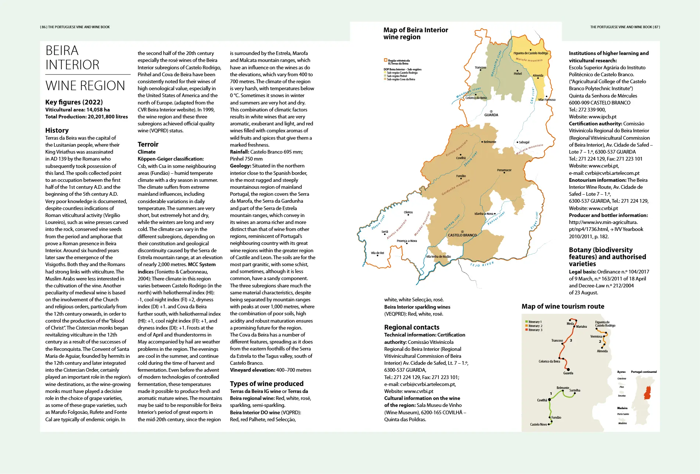
Text · Pages 86–87
BEIRA INTERIOR WINE REGION Key figures (2022) Viticultural area: 14,058 ha Total Production: 20,201,800 litres History Terras da Beira was the capital of the Lusitanian people, where their King Viriathus was assassinated in AD 139 by the Romans who subsequently took possession of this land. The spoils collected point to an occupation between the first half of the 1st century A.D. and the beginning of the 5th century A.D. Very poor knowledge is documented, despite countless indications of Roman viticultural activity (Virgilio Loureiro), such as wine presses carved into the rock, conserved vine seeds from the period and amphorae that prove a Roman presence in Beira Interior. Around six hundred years later saw the emergence of the Visigoths. Both they and the Romans had strong links with viticulture. The Muslim Arabs were less interested in the cultivation of the vine. Another peculiarity of medieval wine is based on the involvement of the Church and religious orders, particularly from the 12th century onwards, in order to control the production of the “blood of Christ”. The Cistercian monks began revitalizing viticulture in the 12th century as a result of the successes of the Reconquista. The Convent of Santa Maria de Aguiar, founded by hermits in the 12th century and later integrated into the Cistercian Order, certainly played an important role in the region’s wine destinations, as the wine-growing monks must have played a decisive role in the choice of grape varieties, as some of these grape varieties, such as Marufo Folgosão, Rufete and Fonte Cal are typically of endemic origin. In
the second half of the 20th century especially the rosé wines of the Beira Interior subregions of Castelo Rodrigo, Pinhel and Cova de Beira have been consistently noted for their wines of high oenological value, especially in the United States of America and the north of Europe. (adapted from the CVR Beira Interior website). In 1999, the wine region and these three subregions achieved official quality wine (VQPRD) status. Terroir Climate Köppen-Geiger classification: Csb, with Csa in some neighbouring areas (Fundão) – humid temperate climate with a dry season in summer. The climate suffers from extreme mainland influences, including considerable variations in daily temperature. The summers are very short, but extremely hot and dry, while the winters are long and very cold. The climate can vary in the different subregions, depending on their constitution and geological discontinuity caused by the Serra de Estrela mountain range, at an elevation of nearly 2,000 metres. MCC System indices (Tonietto & Carbonneau, 2004): There climate in this region varies between Castelo Rodrigo (in the north) with heliothermal index (HI): -1, cool night index (FI) +2, dryness index (DI) +1. and Cova da Beira further south, with heliothermal index (HI): +1, cool night index (FI): +1, and dryness index (DI): +1. Frosts at the end of April and thunderstorms in May accompanied by hail are weather problems in the region. The evenings are cool in the summer, and continue cold during the time of harvest and fermentation. Even before the advent of modern technologies of controlled fermentation, these temperatures made it possible to produce fresh and aromatic mature wines. The mountains may be said to be responsible for Beira Interior’s period of great exports in the mid-20th century, since the region
is surrounded by the Estrela, Marofa and Malcata mountain ranges, which have an influence on the wines as do the elevations, which vary from 400 to 700 metres. The climate of the region is very harsh, with temperatures below 0 °C. Sometimes it snows in winter and summers are very hot and dry. This combination of climatic factors results in white wines that are very aromatic, exuberant and light, and red wines filled with complex aromas of wild fruits and spices that give them a marked freshness. Rainfall: Castelo Branco 695 mm; Pinhel 750 mm Geology: Situated in the northern interior close to the Spanish border, in the most rugged and steeply mountainous region of mainland Portugal, the region covers the Serra da Marofa, the Serra da Gardunha and part of the Serra de Estrela mountain ranges, which convey in its wines an aroma richer and more distinct than that of wine from other regions, reminiscent of Portugal’s neighbouring country with its great wine regions within the greater region of Castile and Leon. The soils are for the most part granitic, with some schist, and sometimes, although it is less common, have a sandy component. The three subregions share much the same material characteristics, despite being separated by mountain ranges with peaks at over 1,000 metres, where the combination of poor soils, high acidity and robust maturation ensures a promising future for the region. The Cova da Beira has a number of different features, spreading as it does from the eastern foothills of the Serra da Estrela to the Tagus valley, south of Castelo Branco. Vineyard elevation: 400–700 metres Types of wine produced Terras da Beira IG wine or Terras da Beira regional wine: Red, white, rosé, sparkling, semi-sparkling. Beira Interior DO wine (VQPRD): Red, red Palhete, red Selecção,
Map of Beira Interior wine region
Massueime river Côa river
Região vitivinícola IG Terras da Beira DOP Beira Interior – Sub-regiões Sub-região Castelo Rodrigo Sub-região Pinhel Sub-região Cova da Beira
Trancoso
Figueira de Castelo Rodrigo Marofa mountain
Pinhel
Almeida
Institutions of higher learning and viticultural research: Escola Superior Agrária do Instituto Politécnico de Castelo Branco. (“Agricultural College of the Castelo
M
o
n
d
ego river Celorico da Beira
Vilar Formoso
Branco Polytechnic Institute”) Quinta da Senhora de Mércules 6000-909 CASTELO BRANCO
GUARDA
Tel.: 272 339 900, Website: www.ipcb.pt
Certification authority: Comissão
Vitivinícola Regional do Beira Interior
ain
Estrela
mount
Covilhã
z
Zê
Fundão
Gardunha
m
ou
n
t
a
i
n
ere river
Belmonte
Sabugal Malcata mountain
Penamacor
(Regional Vitivinicultural Commission of Beira Interior), Av. Cidade de Safed – Lote 7 – 1.º, 6300-537 GUARDA Tel.: 271 224 129, Fax: 271 223 101 Website: www.cvrbi.pt, e-mail: cvrbi@cvrbi.artelecom.pt Enotourism information: The Beira Interior Wine Route, Av. Cidade de Safed – Lote 7 – 1.º,
6300-537 GUARDA, Tel.: 271 224 129,
e river ountain Muradal mountain Oc river er rg es river
Oleiros
Zêzer
Sertã A
l
v
e
l
o
s
m
Proença-a-Nova
reza
Idanha-a-Nova Pônsul
riv
E
CASTELO BRANCO
Website: www.cvrbi.pt Producer and bottler information: http://www.ivv.min-agricultura. pt/np4/1736.html, IVV Yearbook 2010/2011, p. 182.
Vila de Rei
Vila Velha de Ródão
TEJ O RIVER
Botany (biodiversity features) and authorised varieties
Legal basis: Ordinance n.º 104/2017
of 9 March, n.º 163/2011 of 18 April
and Decree-Law n.º 212/2004
of 23 August.
white, white Selecção, rosé. Beira Interior sparkling wines
Map of wine tourism route
(VEQPRD): Red, white, rosé.
Regional contacts Technical information: Certification authority: Comissão Vitivinícola Regional do Beira Interior (Regional Vitivinicultural Commission of Beira Interior) Av. Cidade de Safed, Lt. 7 – 1.º,
Itinerary 1 Itinerary 2 Itinerary 3
Trancoso
Meda Marialva 3
Figueira de Castelo Rodrigo Vermiosa 2 Almeida
Celorico da Beira
6300-537 GUARDA, Tel.: 271 224 129, Fax: 271 223 101;
Guarda
Açores Graciosa
Portugal continental
e-mail: cvrbi@cvrbi.artelecom.pt, Website: www.cvrbi.pt Cultural information on the wine of the region: Sala Museu de Vinho (Wine Museum), 6200-165 COVILHÃ – Quinta das Poldras.
Belmonte
Sortelha
Côa
1
Covilhã
Zêzere
Fundão
Castelo Novo
Pico Terceira Madeira Porto Santo Madeira
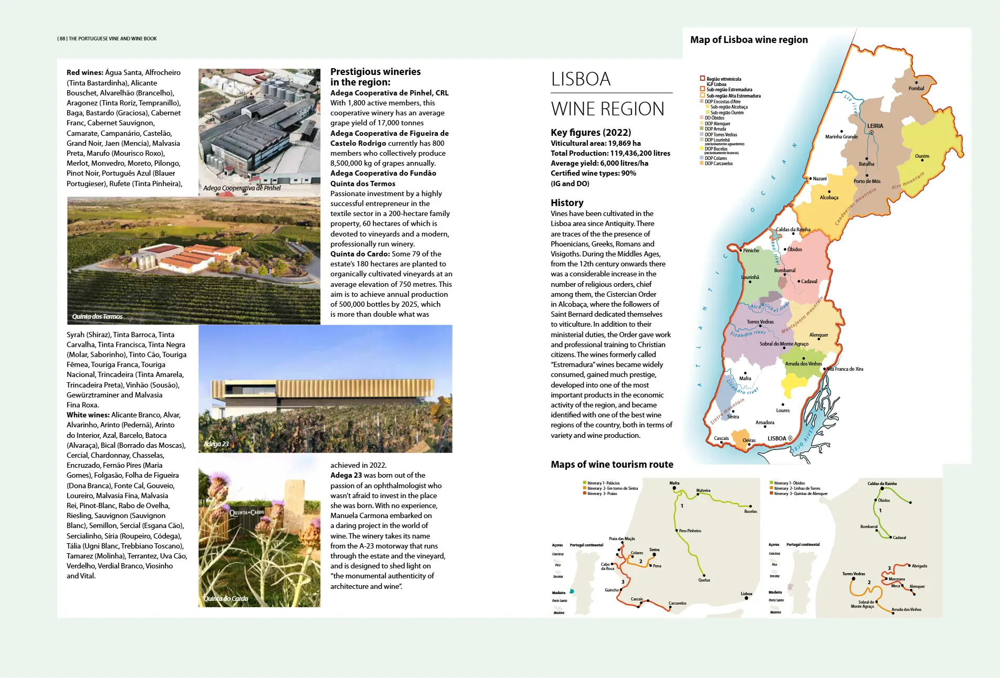
Text · Pages 88–89
Red wines: Água Santa, Alfrocheiro (Tinta Bastardinha), Alicante Bouschet, Alvarelhão (Brancelho), Aragonez (Tinta Roriz, Tempranillo), Baga, Bastardo (Graciosa), Cabernet Franc, Cabernet Sauvignon, Camarate, Campanário, Castelão, Grand Noir, Jaen (Mencia), Malvasia Preta, Marufo (Mourisco Roxo), Merlot, Monvedro, Moreto, Pilongo, Pinot Noir, Português Azul (Blauer Portugieser), Rufete (Tinta Pinheira),
Adega Cooperativa de Pinhel
Quinta dos Termos Syrah (Shiraz), Tinta Barroca, Tinta Carvalha, Tinta Francisca, Tinta Negra (Molar, Saborinho), Tinto Cão, Touriga Fêmea, Touriga Franca, Touriga Nacional, Trincadeira (Tinta Amarela, Trincadeira Preta), Vinhão (Sousão), Gewürztraminer and Malvasia Fina Roxa. White wines: Alicante Branco, Alvar, Alvarinho, Arinto (Pedernã), Arinto do Interior, Azal, Barcelo, Batoca (Alvaraça), Bical (Borrado das Moscas), Cercial, Chardonnay, Chasselas, Encruzado, Fernão Pires (Maria Gomes), Folgasão, Folha de Figueira (Dona Branca), Fonte Cal, Gouveio, Loureiro, Malvasia Fina, Malvasia Rei, Pinot-Blanc, Rabo de Ovelha, Riesling, Sauvignon (Sauvignon Blanc), Semillon, Sercial (Esgana Cão), Sercialinho, Síria (Roupeiro, Códega), Tália (Ugni Blanc, Trebbiano Toscano), Tamarez (Molinha), Terrantez, Uva Cão, Verdelho, Verdial Branco, Viosinho and Vital.
Adega 23
Quinta do Cardo
Prestigious wineries in the region: Adega Cooperativa de Pinhel, CRL With 1,800 active members, this cooperative winery has an average grape yield of 17,000 tonnes Adega Cooperativa de Figueira de Castelo Rodrigo currently has 800 members who collectively produce 8,500,000 kg of grapes annually. Adega Cooperativa do Fundão Quinta dos Termos Passionate investment by a highly successful entrepreneur in the textile sector in a 200-hectare family property, 60 hectares of which is devoted to vineyards and a modern, professionally run winery. Quinta do Cardo: Some 79 of the estate’s 180 hectares are planted to organically cultivated vineyards at an average elevation of 750 metres. This aim is to achieve annual production of 500,000 bottles by 2025, which is more than double what was achieved in 2022. Adega 23 was born out of the passion of an ophthalmologist who wasn’t afraid to invest in the place she was born. With no experience, Manuela Carmona embarked on a daring project in the world of wine. The winery takes its name from the A-23 motorway that runs through the estate and the vineyard, and is designed to shed light on “the monumental authenticity of architecture and wine”.
Map of Lisboa wine region
LISBOA WINE REGION Key figures (2022) Viticultural area: 19,869 ha Total Production: 119,436,200 litres Average yield: 6,000 litres/ha Certified wine types: 90% (IG and DO) History Vines have been cultivated in the Lisboa area since Antiquity. There are traces of the the presence of Phoenicians, Greeks, Romans and Visigoths. During the Middles Ages, from the 12th century onwards there was a considerable increase in the number of religious orders, chief among them, the Cistercian Order in Alcobaça, where the followers of Saint Bernard dedicated themselves to viticulture. In addition to their ministerial duties, the Order gave work and professional training to Christian citizens. The wines formerly called “Estremadura” wines became widely consumed, gained much prestige, developed into one of the most important products in the economic activity of the region, and became identified with one of the best wine regions of the country, both in terms of variety and wine production. Maps of wine tourism route
A
T
L
A
Região vitivinícola
IGP Lisboa Sub-região
Estremadura
Sub-região Alta Estremadura
DOP Encostas d’Aire
Sub-região Alcobaça
Sub-região Ourém
DO Óbidos
DOP Alenquer
DOP Arruda
DOP Torres Vedras
DOP Lourinhã
(exclusivamente aguardente)
DOP Bucelas
(exclusivamente brancos)
DOP Colares
DOP Carcavelos
Pombal Liz
river
Marinha Grande
LEIRIA
Nazaré Alcobaça
Batalha Porto de Mós os mountain
Ourém Aire mountain
O C E A N Candeeir
T
N
C
I
ountain
Real river Liz
Peniche
Caldas da Rainha Óbidos
Lourinhã
Bombarral Cadaval
A l c a brich e l river
Torres Vedras Sizan dro river
m M o n t e j u n to Alenquer
Sobral do Monte Agraço
Mafra
Arruda dos Vinhos Vila Franca de Xira
r
andro rive
Sintra
m
o
un
t
a
i
n
Sintra
Loures Amadora
RIVER
Cascais
Oeiras
LISBOA TEJO
Itinerary 1- Palácios Itinerary 2- Em torno de Sintra Itinerary 3- Praias
Mafra 1
Malveira
Bucelas
Itinerary 1- Óbidos Itinerary 2- Linhas de Torres Itinerary 3- Quintas de Alenquer
Caldas da Rainha
Óbidos
1
Açores Graciosa Pico
Praia das Maçãs
Portugal continental
Colares
Cabo
2
da Roca
Sintra Pena
Terceira Madeira Porto Santo Madeira
3 Guincho
Cascais
Pero Pinheiro Queluz Carcavelos
Lisboa
Açores Graciosa
Portugal continental
Pico
Terceira
Madeira Porto Santo Madeira
Bombarral
Cadaval
Torres Vedras 2 Sobral do Monte Agraço
3
Abrigada
Merceana Meca
Alenquer
Arruda dos Vinhos
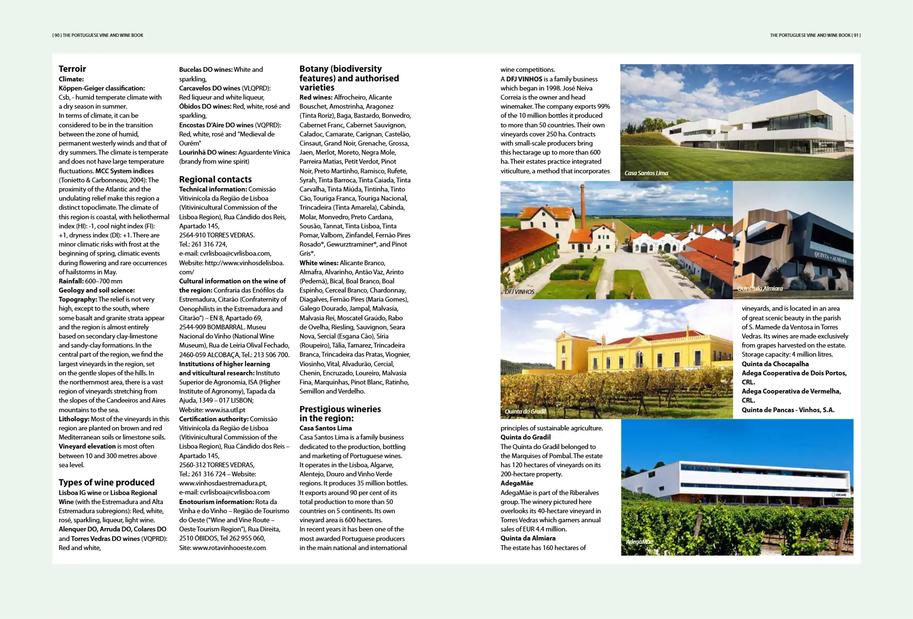
Text · Pages 90–91
Terroir Climate: Köppen-Geiger classification: Csb, - humid temperate climate with a dry season in summer. In terms of climate, it can be considered to be in the transition between the zone of humid, permanent westerly winds and that of dry summers. The climate is temperate and does not have large temperature fluctuations. MCC System indices (Tonietto & Carbonneau, 2004): The proximity of the Atlantic and the undulating relief make this region a distinct topoclimate. The climate of this region is coastal, with heliothermal index (HI): -1, cool night index (FI): +1, dryness index (DI): +1. There are minor climatic risks with frost at the beginning of spring, climatic events during flowering and rare occurrences of hailstorms in May. Rainfall: 600–700 mm Geology and soil science: Topography: The relief is not very high, except to the south, where some basalt and granite strata appear and the region is almost entirely based on secondary clay-limestone and sandy-clay formations. In the central part of the region, we find the largest vineyards in the region, set on the gentle slopes of the hills. In the northernmost area, there is a vast region of vineyards stretching from the slopes of the Candeeiros and Aires mountains to the sea. Lithology: Most of the vineyards in this region are planted on brown and red Mediterranean soils or limestone soils. Vineyard elevation is most often between 10 and 300 metres above sea level. Types of wine produced Lisboa IG wine or Lisboa Regional Wine (with the Estremadura and Alta Estremadura subregions): Red, white, rosé, sparkling, liqueur, light wine. Alenquer DO, Arruda DO, Colares DO and Torres Vedras DO wines (VQPRD): Red and white,
Bucelas DO wines: White and sparkling, Carcavelos DO wines (VLQPRD): Red liqueur and white liqueur, Óbidos DO wines: Red, white, rosé and sparkling, Encostas D’Aire DO wines (VQPRD): Red, white, rosé and ”Medieval de Ourém” Lourinhã DO wines: Aguardente Vínica (brandy from wine spirit) Regional contacts Technical information: Comissão Vitivinícola da Região de Lisboa (Vitivinicultural Commission of the Lisboa Region), Rua Cândido dos Reis, Apartado 145, 2564-910 TORRES VEDRAS. Tel.: 261 316 724, e-mail: cvrlisboa@cvrlisboa.com, Website: http://www.vinhosdelisboa. com/ Cultural information on the wine of the region: Confraria das Enófilos da Estremadura, Citarão (Confraternity of Oenophilists in the Estremadura and Citarão”) – EN 8, Apartado 69, 2544-909 BOMBARRAL. Museu Nacional do Vinho (National Wine Museum), Rua de Leiria Olival Fechado, 2460-059 ALCOBAÇA, Tel.: 213 506 700. Institutions of higher learning and viticultural research: Instituto Superior de Agronomia, ISA (Higher Institute of Agronomy), Tapada da Ajuda, 1349 – 017 LISBON; Website: www.isa.utl.pt Certification authority: Comissão Vitivinícola da Região de Lisboa (Vitivinicultural Commission of the Lisboa Region), Rua Cândido dos Reis – Apartado 145, 2560-312 TORRES VEDRAS, Tel.: 261 316 724 – Website: www.vinhosdaestremadura.pt, e-mail: cvrlisboa@cvrlisboa.com Enotourism information: Rota da Vinha e do Vinho – Região de Tourismo do Oeste (“Wine and Vine Route – Oeste Tourism Region”), Rua Direita, 2510 ÓBIDOS, Tel 262 955 060, Site: www.rotavinhooeste.com
Botany (biodiversity features) and authorised varieties Red wines: Alfrocheiro, Alicante Bouschet, Amostrinha, Aragonez (Tinta Roriz), Baga, Bastardo, Bonvedro, Cabernet Franc, Cabernet Sauvignon, Caladoc, Camarate, Carignan, Castelão, Cinsaut, Grand Noir, Grenache, Grossa, Jaen, Merlot, Moreto, Negra Mole, Parreira Matias, Petit Verdot, Pinot Noir, Preto Martinho, Ramisco, Rufete, Syrah, Tinta Barroca, Tinta Caiada, Tinta Carvalha, Tinta Miúda, Tintinha, Tinto Cão, Touriga Franca, Touriga Nacional, Trincadeira (Tinta Amarela), Cabinda, Molar, Monvedro, Preto Cardana, Sousão, Tannat, Tinta Lisboa, Tinta Pomar, Valbom, Zinfandel, Fernão Pires Rosado®, Gewurztraminer®, and Pinot Gris®. White wines: Alicante Branco, Almafra, Alvarinho, Antão Vaz, Arinto (Pedernã), Bical, Boal Branco, Boal Espinho, Cerceal Branco, Chardonnay, Diagalves, Fernão Pires (Maria Gomes), Galego Dourado, Jampal, Malvasia, Malvasia Rei, Moscatel Graúdo, Rabo de Ovelha, Riesling, Sauvignon, Seara Nova, Sercial (Esgana Cão), Síria (Roupeiro), Tália, Tamarez, Trincadeira Branca, Trincadeira das Pratas, Viognier, Viosinho, Vital, Alvadurão, Cercial, Chenin, Encruzado, Loureiro, Malvasia Fina, Marquinhas, Pinot Blanc, Ratinho, Semillon and Verdelho. Prestigious wineries in the region: Casa Santos Lima Casa Santos Lima is a family business dedicated to the production, bottling and marketing of Portuguese wines. It operates in the Lisboa, Algarve, Alentejo, Douro and Vinho Verde regions. It produces 35 million bottles. It exports around 90 per cent of its total production to more than 50 countries on 5 continents. Its own vineyard area is 600 hectares. In recent years it has been one of the most awarded Portuguese producers in the main national and international
wine competitions. A DFJ VINHOS is a family business which began in 1998. José Neiva Correia is the owner and head winemaker. The company exports 99% of the 10 million bottles it produced to more than 50 countries. Their own vineyards cover 250 ha. Contracts with small-scale producers bring this hectarage up to more than 600 ha. Their estates practice integrated viticulture, a method that incorporates
Casa Santos Lima
DFJ VINHOS
Quinta do Gradil principles of sustainable agriculture. Quinta do Gradil The Quinta do Gradil belonged to the Marquises of Pombal. The estate has 120 hectares of vineyards on its 200-hectare property. AdegaMãe AdegaMãe is part of the Riberalves group. The winery pictured here overlooks its 40-hectare vineyard in Torres Vedras which garners annual sales of EUR 4.4 million. Quinta da Almiara The estate has 160 hectares of
AdegaMãe
Quinta da Almiara vineyards, and is located in an area of great scenic beauty in the parish of S. Mamede da Ventosa in Torres Vedras. Its wines are made exclusively from grapes harvested on the estate. Storage capacity: 4 million litres. Quinta da Chocapalha Adega Cooperativa de Dois Portos, CRL. Adega Cooperativa de Vermelha, CRL. Quinta de Pancas - Vinhos, S.A.
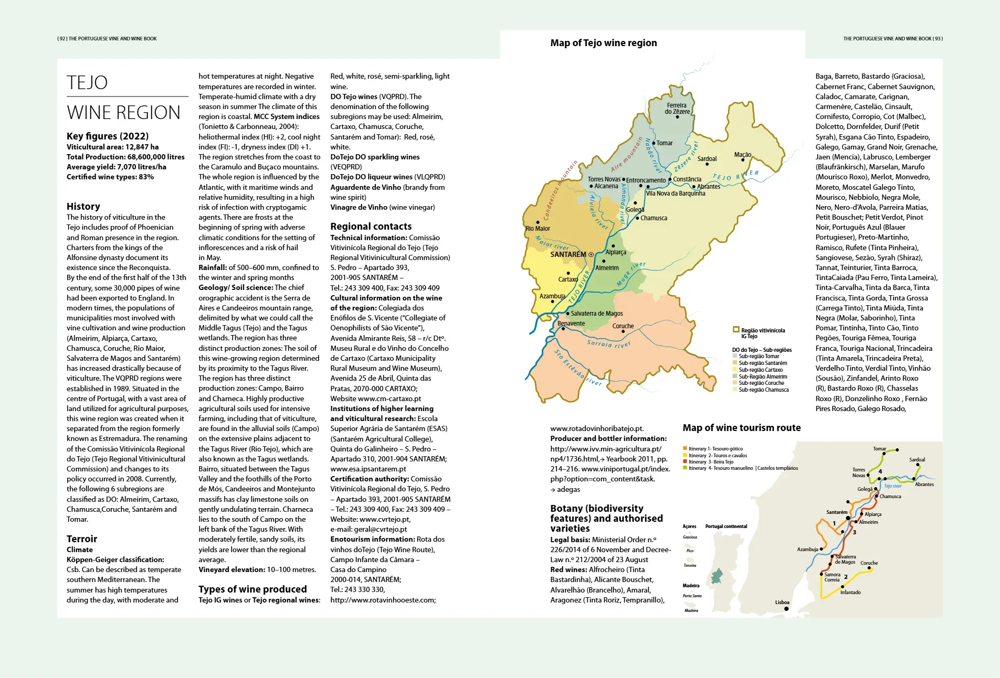
Text · Pages 92–93
TEJO WINE REGION Key figures (2022) Viticultural area: 12,847 ha Total Production: 68,600,000 litres Average yield: 7,070 litres/ha Certified wine types: 83% History The history of viticulture in the Tejo includes proof of Phoenician and Roman presence in the region. Charters from the kings of the Alfonsine dynasty document its existence since the Reconquista. By the end of the first half of the 13th century, some 30,000 pipes of wine had been exported to England. In modern times, the populations of municipalities most involved with vine cultivation and wine production (Almeirim, Alpiarça, Cartaxo, Chamusca, Coruche, Rio Maior, Salvaterra de Magos and Santarém) has increased drastically because of viticulture. The VQPRD regions were established in 1989. Situated in the centre of Portugal, with a vast area of land utilized for agricultural purposes, this wine region was created when it separated from the region formerly known as Estremadura. The renaming of the Comissão Vitivinícola Regional do Tejo (Tejo Regional Vitivinicultural Commission) and changes to its policy occurred in 2008. Currently, the following 6 subregions are classified as DO: Almeirim, Cartaxo, Chamusca,Coruche, Santarém and Tomar. Terroir Climate Köppen-Geiger classification: Csb. Can be described as temperate southern Mediterranean. The summer has high temperatures during the day, with moderate and
hot temperatures at night. Negative temperatures are recorded in winter. Temperate-humid climate with a dry season in summer The climate of this region is coastal. MCC System indices (Tonietto & Carbonneau, 2004): heliothermal index (HI): +2, cool night index (FI): -1, dryness index (DI) +1. The region stretches from the coast to the Caramulo and Buçaco mountains. The whole region is influenced by the Atlantic, with it maritime winds and relative humidity, resulting in a high risk of infection with cryptogamic agents. There are frosts at the beginning of spring with adverse climatic conditions for the setting of inflorescences and a risk of hail in May. Rainfall: of 500–600 mm, confined to the winter and spring months Geology/ Soil science: The chief orographic accident is the Serra de Aires e Candeeiros mountain range, delimited by what we could call the Middle Tagus (Tejo) and the Tagus wetlands. The region has three distinct production zones: The soil of this wine-growing region determined by its proximity to the Tagus River. The region has three distinct production zones: Campo, Bairro and Charneca. Highly productive agricultural soils used for intensive farming, including that of viticulture, are found in the alluvial soils (Campo) on the extensive plains adjacent to the Tagus River (Rio Tejo), which are also known as the Tagus wetlands. Bairro, situated between the Tagus Valley and the foothills of the Porto de Mós, Candeeiros and Montejunto massifs has clay limestone soils on gently undulating terrain. Charneca lies to the south of Campo on the left bank of the Tagus River. With moderately fertile, sandy soils, its yields are lower than the regional average. Vineyard elevation: 10–100 metres. Types of wine produced Tejo IG wines or Tejo regional wines:
Red, white, rosé, semi-sparkling, light wine. DO Tejo wines (VQPRD). The denomination of the following subregions may be used: Almeirim, Cartaxo, Chamusca, Coruche, Santarém and Tomar): Red, rosé, white. DoTejo DO sparkling wines (VEQPRD) DoTejo DO liqueur wines (VLQPRD) Aguardente de Vinho (brandy from wine spirit) Vinagre de Vinho (wine vinegar) Regional contacts Technical information: Comissão Vitivinícola Regional do Tejo (Tejo Regional Vitivinicultural Commission) S. Pedro – Apartado 393, 2001-905 SANTARÉM – Tel.: 243 309 400, Fax: 243 309 409 Cultural information on the wine of the region: Colegiada dos Enófilos de S. Vicente (“Collegiate of Oenophilists of São Vicente”), Avenida Almirante Reis, 58 – r/c Dtº. Museu Rural e do Vinho do Concelho de Cartaxo (Cartaxo Municipality Rural Museum and Wine Museum), Avenida 25 de Abril, Quinta das Pratas, 2070-000 CARTAXO; Website www.cm-cartaxo.pt Institutions of higher learning and viticultural research: Escola Superior Agrária de Santarém (ESAS) (Santarém Agricultural College), Quinta do Galinheiro – S. Pedro – Apartado 310, 2001-904 SANTARÉM; www.esa.ipsantarem.pt Certification authority: Comissão Vitivinícola Regional do Tejo, S. Pedro – Apartado 393, 2001-905 SANTARÉM – Tel.: 243 309 400, Fax: 243 309 409 – Website: www.cvrtejo.pt, e-mail: geral@cvrtejo.pt Enotourism information: Rota dos vinhos doTejo (Tejo Wine Route), Campo Infante da Câmara – Casa do Campino 2000-014, SANTARÉM; Tel.: 243 330 330, http://www.rotavinhooeste.com;
Map of Tejo wine region
Ferreira do Zêzere
Candeeiros mountain ountain e river
Nabão rive Almonda river Alviela ri M
Tomar
Rio Maior
Aire m
r
Zêzer
Sardoal
Torres Novas Entroncamento Constância T E
J
O
Mação R IVER
Alcanena
Abrantes
Vila Nova da Barquinha
Golegã Chamusca ver
a ior river SANTARÉM
Alpiarça
Almeirim
river
Cartaxo M
TEJO RIVER uge
Azambuja
E Sto
Salvaterra de Magos
Benavente
Coruche
Sorraia ri ver
stêvão river
Região vitivinícola IG Tejo DO do Tejo – Sub-regiões Sub-região Tomar Sub-região Santarém Sub-região Cartaxo Sub-Região Almeirim Sub-região Coruche Sub-região Chamusca
Baga, Barreto, Bastardo (Graciosa), Cabernet Franc, Cabernet Sauvignon, Caladoc, Camarate, Carignan, Carmenère, Castelão, Cinsault, Cornifesto, Corropio, Cot (Malbec), Dolcetto, Dornfelder, Durif (Petit Syrah), Esgana Cão Tinto, Espadeiro, Galego, Gamay, Grand Noir, Grenache, Jaen (Mencia), Labrusco, Lemberger (Blaufränkirsch), Marselan, Marufo (Mourisco Roxo), Merlot, Monvedro, Moreto, Moscatel Galego Tinto, Mourisco, Nebbiolo, Negra Mole, Nero, Nero-d’Avola, Parreira Matias, Petit Bouschet; Petit Verdot, Pinot Noir, Português Azul (Blauer Portugieser), Preto-Martinho, Ramisco, Rufete (Tinta Pinheira), Sangiovese, Sezão, Syrah (Shiraz), Tannat, Teinturier, Tinta Barroca, TintaCaiada (Pau Ferro, Tinta Lameira), Tinta-Carvalha, Tinta da Barca, Tinta Francisca, Tinta Gorda, Tinta Grossa (Carrega Tinto), Tinta Miúda, Tinta Negra (Molar, Saborinho), Tinta Pomar, Tintinha, Tinto Cão, Tinto Pegões, Touriga Fêmea, Touriga Franca, Touriga Nacional, Trincadeira (Tinta Amarela, Trincadeira Preta), Verdelho Tinto, Verdial Tinto, Vinhão (Sousão), Zinfandel, Arinto Roxo (R), Bastardo Roxo (R), Chasselas Roxo (R), Donzelinho Roxo , Fernão Pires Rosado, Galego Rosado,
www.rotadovinhoribatejo.pt. Producer and bottler information: http://www.ivv.min-agricultura.pt/ np4/1736.html, Yearbook 2011, pp. 214–216. www.viniportugal.pt/index. php?option=com_content&task. adegas Botany (biodiversity features) and authorised varieties Legal basis: Ministerial Order n.º 226/2014 of 6 November and DecreeLaw n.º 212/2004 of 23 August Red wines: Alfrocheiro (Tinta Bastardinha), Alicante Bouschet, Alvarelhão (Brancelho), Amaral, Aragonez (Tinta Roriz, Tempranillo),
Map of wine tourism route
Itinerary 1- Tesouro gótico Itinerary 2- Touros e cavalos Itinerary 3- Beira Tejo Itinerary 4- Tesouro manuelino | Castelos templários
Açores Graciosa
Portugal continental
Tomar
Torres Novas
4
Golegã Tejo river
Chamusca
Santarém 1
Alpiarça Almeirim
3
Sardoal Abrantes
Pico Terceira Madeira Porto Santo Madeira
Lisboa
Azambuja
Salvaterra
de Magos
Coruche
Samora Correia
2
Infantado
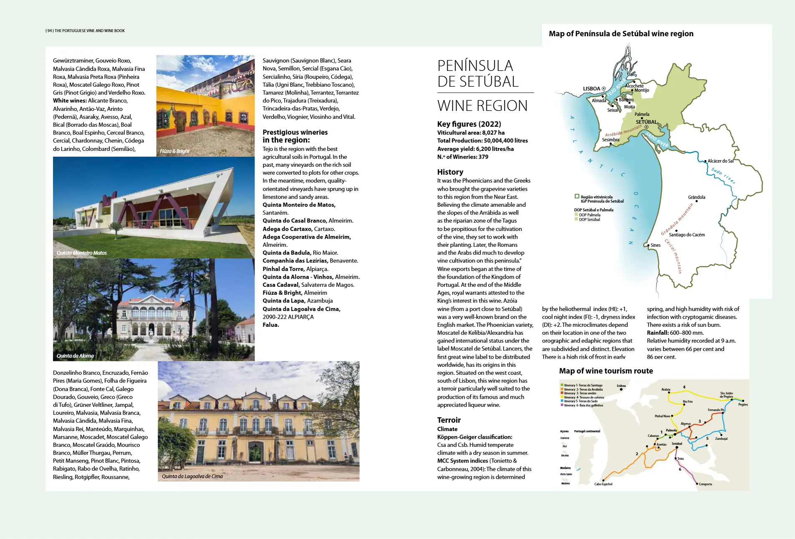
Text · Pages 94–95
Gewürztraminer, Gouveio Roxo, Malvasia Cândida Roxa, Malvasia Fina Roxa, Malvasia Preta Roxa (Pinheira Roxa), Moscatel Galego Roxo, Pinot Gris (Pinot Grigio) and Verdelho Roxo. White wines: Alicante Branco, Alvarinho, Antão-Vaz, Arinto (Pedernã), Asaraky, Avesso, Azal, Bical (Borrado das Moscas), Boal Branco, Boal Espinho, Cerceal Branco, Cercial, Chardonnay, Chenin, Códega do Larinho, Colombard (Semilão),
Fiúza & Bright
Quinta Monteiro Matos
Quinta da Alorna Donzelinho Branco, Encruzado, Fernão Pires (Maria Gomes), Folha de Figueira (Dona Branca), Fonte Cal, Galego Dourado, Gouveio, Greco (Greco di Tufo), Grüner Veltliner, Jampal, Loureiro, Malvasia, Malvasia Branca, Malvasia Cândida, Malvasia Fina, Malvasia Rei, Manteúdo, Marquinhas, Marsanne, Moscadet, Moscatel Galego Branco, Moscatel Graúdo, Mourisco Branco, Müller Thurgau, Perrum, Petit Manseng, Pinot Blanc, Pintosa, Rabigato, Rabo de Ovelha, Ratinho, Riesling, Rotgipfler, Roussanne,
Quinta da Lagoalva de Cima
Sauvignon (Sauvignon Blanc), Seara Nova, Semillon, Sercial (Esgana Cão), Sercialinho, Síria (Roupeiro, Códega), Tália (Ugni Blanc, Trebbiano Toscano), Tamarez (Molinha), Terrantez, Terrantez do Pico, Trajadura (Treixadura), Trincadeira-das-Pratas, Verdejo, Verdelho, Viognier, Viosinho and Vital. Prestigious wineries in the region: Tejo is the region with the best agricultural soils in Portugal. In the past, many vineyards on the rich soil were converted to plots for other crops. In the meantime, modern, qualityorientated vineyards have sprung up in limestone and sandy areas. Quinta Monteiro de Matos, Santarém. Quinta do Casal Branco, Almeirim. Adega do Cartaxo, Cartaxo. Adega Cooperativa de Almeirim, Almeirim. Quinta da Badula, Rio Maior. Companhia das Lezírias, Benavente. Pinhal da Torre, Alpiarça. Quinta da Alorna - Vinhos, Almeirim. Casa Cadaval, Salvaterra de Magos. Fiúza & Bright, Almeirim Quinta da Lapa, Azambuja Quinta da Lagoalva de Cima, 2090-222 ALPIARÇA Falua.
Map of Península de Setúbal wine region
PENÍNSULA DE SETÚBAL WINE REGION Key figures (2022) Viticultural area: 8,027 ha Total Production: 50,004,400 litres Average yield: 6,200 litres/ha N.º of Wineries: 379 History It was the Phoenicians and the Greeks who brought the grapevine varieties to this region from the Near East. Believing the climate amenable and the slopes of the Arrábida as well as the riparian zone of the Tagus to be propitious for the cultivation of the vine, they set to work with their planting. Later, the Romans and the Arabs did much to develop vine cultivation on this peninsula.” Wine exports began at the time of the foundation of the Kingdom of Portugal. At the end of the Middle Ages, royal warrants attested to the King’s interest in this wine. Azóia wine (from a port close to Setúbal) was a very well-known brand on the English market. The Phoenician variety, Moscatel de Kelibia/Alexandria has gained international status under the label Moscatel de Setúbal. Lancers, the first great wine label to be distributed worldwide, has its origins in this region. Situated on the west coast, south of Lisbon, this wine region has a terroir particularly well suited to the production of its famous and much appreciated liqueur wine. Terroir Climate Köppen-Geiger classification: Csa and Csb. Humid temperate climate with a dry season in summer. MCC System indices (Tonietto & Carbonneau, 2004): The climate of this wine-growing region is determined
VER mountain
r ercal mountain OCEA N A ATL
LISBOA Almada
RI TEJO
Alcochete Montijo
Barreiro
Moita Seixal
Palmela
SETÚBAL
Arrábida Sesimbra
mountain
SADO
RIVER
N T I C
Alcácer do Sal Sado r i ve
Região vitivinícola IGP Península de Setúbal DOP Setúbal e Palmela DOP Palmela DOP Setúbal
Grândola
G
r
â
n
d
ola
Santiago
do
Cacém
C
Sines
by the heliothermal index (HI): +1, cool night index (FI): -1, dryness index (DI): +2. The microclimates depend on their location in one of the two orographic and edaphic regions that are subdivided and distinct. Elevation There is a high risk of frost in early
spring, and high humidity with risk of infection with cryptogamic diseases. There exists a risk of sun burn. Rainfall: 600–800 mm. Relative humidity recorded at 9 a.m. varies between 66 per cent and 86 per cent.
Map of wine tourism route
Itinerary 1- Terras de Santiago Itinerary 2- Terras da Arrábida Itinerary 3- Terras verdes Itinerary 4- Tesouro de colonos Itinerary 5- Terras do Sado Itinerary 6- Baía dos gol nhos
Lisboa
Açores Graciosa
Portugal continental
Pico
Terceira
Madeira Porto Santo Madeira
Cabo Espichel
Atalaia
4 Rio Frio
Sto. Isidro de Pegões
Pegões
Pinhal Novo
Cabanas
1
Palmela
Algeruz
Azeitão
Setúbal
Fernando Pó 3
5 Zambujal
2 Tróia
6
Comporta
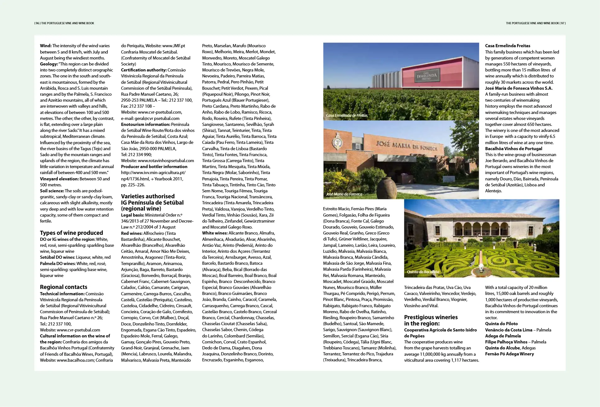
Text · Pages 96–97
Wind: The intensity of the wind varies between 5 and 8 km/h, with July and August being the windiest months. Geology: “This region can be divided into two completely distinct orographic zones. The one in the south and southeast is mountainous, formed by the Arrábida, Rosca and S. Luis mountain ranges and by the Palmela, S. Francisco and Azeitão mountains, all of which are interwoven with valleys and hills, at elevations of between 100 and 500 metres. The other; the other, by contrast, is flat, extending over a large plain along the river Sado.” It has a mixed subtropical, Mediterranean climate. Influenced by the proximity of the sea, the river basins of the Tagus (Tejo) and Sado and by the mountain ranges and uplands of the region, the climate has little variation in temperature and annual rainfall of between 400 and 500 mm.” Vineyard elevation: Between 50 and 500 metres. Soil science: The soils are podsolgranitic, sandy-clay or sandy-clay loam, calcareous with slight alkalinity, mostly very deep and with low water retention capacity, some of them compact and fertile. Types of wine produced DO or IG wines of the region: White, red, rosé, semi-sparkling: sparkling base wine, liqueur wine Setúbal DO wines: Liqueur, white, red Palmela DO wines: White, red, rosé, semi-sparkling: sparkling base wine, liqueur wine Regional contacts Technical information: Comissão Vitivinícola Regional da Península de Setúbal (Regional Vitivinicultural Commission of Península de Setúbal); Rua Padre Manuel Caetano n.º 26; Tel.: 212 337 100, Website: www.cvr-psetubal.com Cultural information on the wine of the region: Confraria dos amigos da Bacalhôa Vinhos Portugal (Confraternity of Friends of Bacalhôa Wines, Portugal), Website: www.bacalhoa.com; Confraria
do Periquita, Website: www.JMF.pt Confraria Moscatel de Setúbal. (Confraternity of Moscatel de Setúbal Society) Certification authority: Comissão Vitivinícola Regional da Península de Setúbal (Regional Vitivinicultural Commission of the Setúbal Península), Rua Padre Manuel Caetano, 26; 2950-253 PALMELA – Tel.: 212 337 100, Fax: 212 337 108 – Website: www.cvr-psetubal.com, e-mail: geral@cvr psetubal.com Enotourism information: Península de Setúbal Wine Route/Rota dos vinhos da Península de Setúbal, Costa Azul; Casa Mãe da Rota dos Vinhos, Largo de São João, 2950-000 PALMELA, Tel: 212 334 990; Website: www.rotavinhospsetubal.com Producer and bottler information http://www.ivv.min-agricultura.pt/ np4/1736.html, Yearbook 2011, pp. 225–226. Varieties authorised IG Península de Setúbal (regional wine) Legal basis: Ministerial Order n.º 346/2013 of 27 November and DecreeLaw n.º 212/2004 of 3 August Red wines: Alfrocheiro (Tinta Bastardinha), Alicante Bouschet, Alvarelhão (Brancelho), Alvarelhão Ceitão, Amaral, Amor Não Me Deixes, Amostrinha, Aragonez (Tinta-Roriz, Tempranillo), Aramon, Arinarnoa, Arjunção, Baga, Barreto, Bastardo (Graciosa), Bonvedro, Borraçal, Branjo, Cabernet Franc, Cabernet-Sauvignon, Caladoc, Calrão, Camarate, Carignan, Carmenère, Carrega-Burros, Casculho, Castelã, Castelão (Periquita), Castelino, Casteloa, Cidadelhe, Cidreiro, Cinsault, Concieira, Coração de Galo, Cornifesto, Corropio, Corvo, Cot (Malbec), Doçal, Doce, Donzelinho Tinto, Dornfelder, Engomada, Esgana Cão Tinto, Espadeiro, Espadeiro Mole, Ferral, Galego, Gamay, Gonçalo Pires, Gouveio Preto, Grand-Noir, Granjeal, Grenache, Jaen (Mencia), Labrusco, Lourela, Malandra, Malvarisco, Malvasia Preta, Manteúdo
Preto, Marselan, Marufo (Mourisco Roxo), Melhorio, Meira, Merlot, Mondet, Monvedro, Moreto, Moscatel Galego Tinto, Mourisco, Mourisco de Semente, Mourisco de Trevões, Negra Mole, Nevoeira, Padeiro, Parreira Matias, Patorra, Pedral, Pero Pinhão, Petit Bouschet; Petit Verdot, Pexem, Pical (Piquepoul Noir), Pilongo, Pinot Noir, Português Azul (Blauer Portugieser), Preto Cardana, Preto Martinho, Rabo de Anho, Rabo de Lobo, Ramisco, Ricoca, Rodo, Roseira, Rufete (Tinta Pinheira), Sangiovese, Santareno, Sevilhão, Syrah (Shiraz), Tannat, Teinturier, Tinta, Tinta Aguiar, Tinta Aurélio, Tinta Barroca, Tinta Caiada (Pau Ferro, Tinta Lameira), Tinta Carvalha, Tinta de Lisboa (Bastardo Tinto), Tinta Fontes, Tinta Francisca, Tinta Grossa (Carrega Tinto), Tinta Martins, Tinta Mesquita, Tinta Miúda, Tinta Negra (Molar, Saborinho), Tinta Penajoia, Tinta Pereira, Tinta Pomar, Tinta Tabuaço, Tintinha, Tinto Cão, Tinto Sem Nome, Touriga Fêmea, Touriga Franca, Touriga Nacional, Transâncora, Trincadeira (Tinta Amarela, Trincadeira Preta), Valdosa, Varejoa, Verdelho Tinto, Verdial Tinto, Vinhão (Sousão), Xara, Zé do Telheiro, Zinfandel, Gewürztraminer and Moscatel Galego Roxo. White wines: Alicante Branco, Almafra, Almenhaca, Alvadurão, Alvar, Alvarinho, Antão Vaz, Arinto (Pedernã), Arinto do Interior, Arinto dos Açores (Terrantez da Terceira), Arnsburger, Avesso, Azal, Barcelo, Bastardo Branco, Batoca (Alvaraça), Beba, Bical (Borrado das Moscas), Boal Barreiro, Boal Branco, Boal Espinho, Branco Desconhecido, Branco Especial, Branco Gouvães (Alvarelhão Branco), Branco Guimarães, Branco João, Branda, Cainho, Caracol, Caramela, Carrasquenho, Carrega Branco, Cascal, Castelão Branco, Castelo Branco, Cerceal Branco, Cercial, Chardonnay, Chasselas, Chasselas Cioutat (Chasselas Salsa), Chasselas Sabor, Chenin, Códega do Larinho, Colombard (Semilão), Cornichon, Corval, Crato Espanhol, Dedo de Dama, Diagalves, Dona Joaquina, Donzelinho Branco, Dorinto, Encruzado, Esganinho, Esganoso,
Casa Ermelinda de Freitas
José Maria da Fonseca
AdegaMãe
Casa Ermelinda Freitas This family business which has been led by generations of competent women manages 550 hectares of vineyards, bottling more than 15 million litres of wine annually which is distributed to roughly 30 markets across the world. José Maria de Fonseca Vinhos S.A. A family-run business with almost two centuries of winemaking history employs the most advanced winemaking techniques and manages several estates whose vineyards together cover almost 650 hectares. The winery is one of the most advanced in Europe with a capacity to vinify 6.5 million litres of wine at any one time. Bacalhôa Vinhos de Portugal This is the wine group of businessman Joe Berardo, and Bacalhôa Vinhos de Portugal owns wineries in the most important of Portugal’s wine regions, namely Douro, Dão, Bairrada, Península de Setúbal (Azeitão), Lisboa and Alentejo.
Estreito Macio, Fernão Pires (Maria Gomes), Folgasão, Folha de Figueira (Dona Branca), Fonte Cal, Galego Dourado, Gouveio, Gouveio Estimado, Gouveio Real, Granho, Greco (Greco di Tufo), Grüner Veltliner, Jacquère, Jampal, Lameiro, Larião, Leira, Loureiro, Luzidio, Malvasia, Malvasia Bianca, Malvasia Branca, Malvasia Cândida, Malvasia de São Jorge, Malvasia Fina, Malvasia Parda (Farinheira), Malvasia Rei, Malvasia Romana, Manteúdo, Moscadet, Moscatel Graúdo, Moscatel Nunes, Mourisco Branco, Müller Thurgau, Pé Comprido, Perigó, Perrum, Pinot Blanc, Pintosa, Praça, Promissão, Rabigato, Rabigato Franco, Rabigato Moreno, Rabo de Ovelha, Ratinho, Riesling, Roupeiro Branco, Samarrinho (Budelho), Santoal, São Mamede, Sarigo, Sauvignon (Sauvignon Blanc), Semillon, Sercial (Esgana Cão), Síria (Roupeiro, Códega), Tália (Ugni Blanc, Trebbiano Toscano), Tamarez (Molinha), Terrantez, Terrantez do Pico, Trajadura (Treixadura), Trincadeira Branca,
Quinta da Bacalhôa
Trincadeira das Pratas, Uva Cão, Uva Cavaco, Valveirinho, Vencedor, Verdejo, Verdelho, Verdial Branco, Viognier, Viosinho and Vital. Prestigious wineries in the region: Cooperativa Agrícola de Santo Isidro de Pegões The cooperative produces wine from the grape harvests totalling an average 11,000,000 kg annually from a viticultural area covering 1,117 hectares.
With a total capacity of 20 million litres, 15,000 oak barrels and roughly 1,000 hectares of productive vineyards, Bacalhôa Vinhos de Portugal continues in its commitment to innovation in the sector. Quinta do Piloto Venâncio da Costa Lima – Palmela Adega de Palmela Filipe Palhoça Vinhos – Palmela Quinta do Alcube, Adegas Fernão Pó Adega Winery
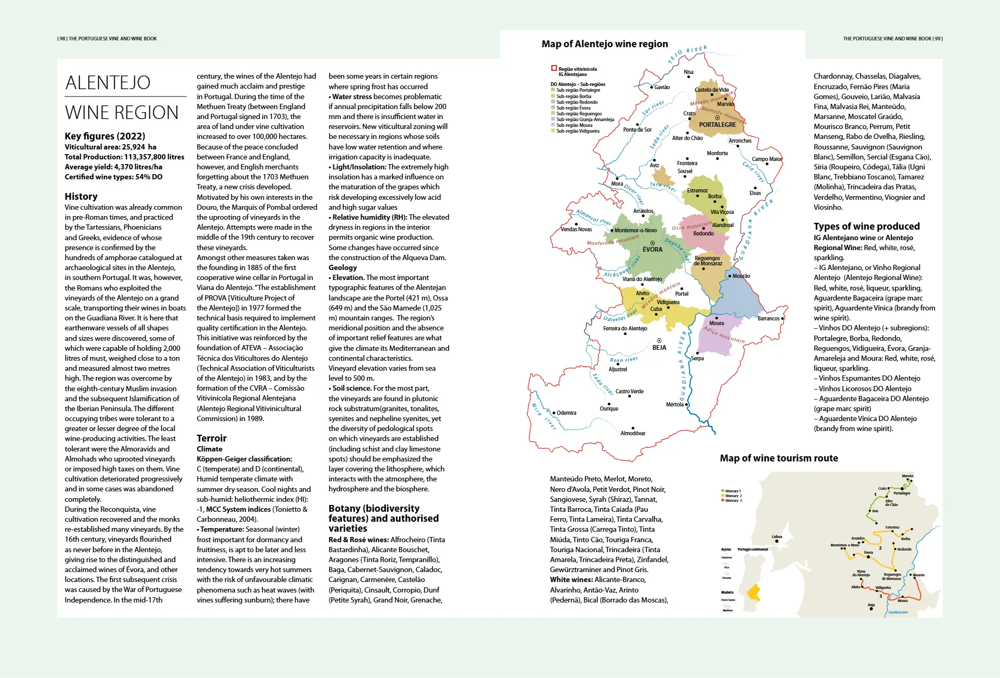
Text · Pages 98–99
ALENTEJO WINE REGION Key figures (2022) Viticultural area: 25,924 ha Total Production: 113,357,800 litres Average yield: 4,370 litres/ha Certified wine types: 54% DO History Vine cultivation was already common in pre-Roman times, and practiced by the Tartessians, Phoenicians and Greeks, evidence of whose presence is confirmed by the hundreds of amphorae catalogued at archaeological sites in the Alentejo, in southern Portugal. It was, however, the Romans who exploited the vineyards of the Alentejo on a grand scale, transporting their wines in boats on the Guadiana River. It is here that earthenware vessels of all shapes and sizes were discovered, some of which were capable of holding 2,000 litres of must, weighed close to a ton and measured almost two metres high. The region was overcome by the eighth-century Muslim invasion and the subsequent Islamification of the Iberian Peninsula. The different occupying tribes were tolerant to a greater or lesser degree of the local wine-producing activities. The least tolerant were the Almoravids and Almohads who uprooted vineyards or imposed high taxes on them. Vine cultivation deteriorated progressively and in some cases was abandoned completely. During the Reconquista, vine cultivation recovered and the monks re-established many vineyards. By the 16th century, vineyards flourished as never before in the Alentejo, giving rise to the distinguished and acclaimed wines of Évora, and other locations. The first subsequent crisis was caused by the War of Portuguese Independence. In the mid-17th
century, the wines of the Alentejo had gained much acclaim and prestige in Portugal. During the time of the Methuen Treaty (between England and Portugal signed in 1703), the area of land under vine cultivation increased to over 100,000 hectares. Because of the peace concluded between France and England, however, and English merchants forgetting about the 1703 Methuen Treaty, a new crisis developed. Motivated by his own interests in the Douro, the Marquis of Pombal ordered the uprooting of vineyards in the Alentejo. Attempts were made in the middle of the 19th century to recover these vineyards. Amongst other measures taken was the founding in 1885 of the first cooperative wine cellar in Portugal in Viana do Alentejo. “The establishment of PROVA [Viticulture Project of the Alentejo]) in 1977 formed the technical basis required to implement quality certification in the Alentejo. This initiative was reinforced by the foundation of ATEVA – Associação Técnica dos Viticultores do Alentejo (Technical Association of Viticulturists of the Alentejo) in 1983, and by the formation of the CVRA – Comissão Vitivinícola Regional Alentejana (Alentejo Regional Vitivinicultural Commission) in 1989. Terroir Climate Köppen-Geiger classification: C (temperate) and D (continental), Humid temperate climate with summer dry season. Cool nights and sub-humid: heliothermic index (HI): -1, MCC System indices (Tonietto & Carbonneau, 2004). • Temperature: Seasonal (winter) frost important for dormancy and fruitiness, is apt to be later and less intensive. There is an increasing tendency towards very hot summers with the risk of unfavourable climatic phenomena such as heat waves (with vines suffering sunburn); there have
been some years in certain regions where spring frost has occurred • Water stress becomes problematic if annual precipitation falls below 200 mm and there is insufficient water in reservoirs. New viticultural zoning will be necessary in regions whose soils have low water retention and where irrigation capacity is inadequate. • Light/Insolation: The extremely high insolation has a marked influence on the maturation of the grapes which risk developing excessively low acid and high sugar values • Relative humidity (RH): The elevated dryness in regions in the interior permits organic wine production. Some changes have occurred since the construction of the Alqueva Dam. Geology • Elevation. The most important typographic features of the Alentejan landscape are the Portel (421 m), Ossa (649 m) and the São Mamede (1,025 m) mountain ranges. The region’s meridional position and the absence of important relief features are what give the climate its Mediterranean and continental characteristics. Vineyard elevation varies from sea level to 500 m. • Soil science. For the most part, the vineyards are found in plutonic rock substratum(granites, tonalites, syenites and nepheline syenites, yet the diversity of pedological spots on which vineyards are established (including schist and clay limestone spots) should be emphasized the layer covering the lithosphere, which interacts with the atmosphere, the hydrosphere and the biosphere. Botany (biodiversity features) and authorised varieties Red & Rosé wines: Alfrocheiro (Tinta Bastardinha), Alicante Bouschet, Aragones (Tinta Roriz, Tempranillo), Baga, Cabernet-Sauvignon, Caladoc, Carignan, Carmenère, Castelão (Periquita), Cinsault, Corropio, Dunf (Petite Syrah), Grand Noir, Grenache,
ver Sad ver Mir
Map of Alentejo wine region J O R I V E R
S Seda rive TE
Região vitivinícola IG Alentejano
Nisa
DO Alentejo – Sub-regiões Sub-região Portalegre Sub-região Borba Sub-região Redondo Sub-região Évora Sub-região Reguengos Sub-região Granja-Amareleja Sub-região Moura Sub-região Vidigueira
Gavião
or river
r
Ponte de Sor
CraMtoaCSar. vsMtãeaolommdeoedMuVeanidmrtveaoãiuonn PORTALEGRE
t
a
i
n
Alter do Chão
Arronches
Monforte
Aviz
Fronteira
Sousel
Mora Divo
Tera river
Estremoz
r river
Borba
Almans or
river
Arraiolos
Vendas Novas
Montemor-o-Novo
Monfurado mountain
Vila Viçosa
Ossa
m
o
u
n
ta
i
nAlandroal
Redondo
Degeb
ÉVORA
Campo Maior
Caia
r
iver
Elvas IVER R
e river
Alcáçovas
Viana do Alentejo
Alvito en
d
r
o
m
o
n
t
a
i
n
Portel
Vidigueira
Odivelas river
Cuba
Ferreira do Alentejo
Reguengos de Monsaraz Mourão Moura Adiça mountain
BEJA
Roxo river Aljustrel
Serpa
Barrancos
river M GUADIA NA RIVER GUAD I A NA
a Odemira ri
o ri Castro Verde Ourique Almodôvar
Mértola
Chardonnay, Chasselas, Diagalves, Encruzado, Fernão Pires (Maria Gomes), Gouveio, Larião, Malvasia Fina, Malvasia Rei, Manteúdo, Marsanne, Moscatel Graúdo, Mourisco Branco, Perrum, Petit Manseng, Rabo de Ovelha, Riesling, Roussanne, Sauvignon (Sauvignon Blanc), Semillon, Sercial (Esgana Cão), Síria (Roupeiro, Códega), Tália (Ugni Blanc, Trebbiano Toscano), Tamarez (Molinha), Trincadeira das Pratas, Verdelho, Vermentino, Viognier and Viosinho. Types of wine produced IG Alentejano wine or Alentejo Regional Wine: Red, white, rosé, sparkling. – IG Alentejano, or Vinho Regional Alentejo (Alentejo Regional Wine): Red, white, rosé, liqueur, sparkling, Aguardente Bagaceira (grape marc spirit), Aguardente Vínica (brandy from wine spirit). – Vinhos DO Alentejo (+ subregions): Portalegre, Borba, Redondo, Reguengos, Vidigueira, Évora, GranjaAmareleja and Moura: Red, white, rosé, liqueur, sparkling. – Vinhos Espumantes DO Alentejo – Vinhos Licorosos DO Alentejo – Aguardente Bagaceira DO Alentejo (grape marc spirit) – Aguardente Vínica DO Alentejo (brandy from wine spirit).
Manteúdo Preto, Merlot, Moreto, Nero d’Avola, Petit Verdot, Pinot Noir, Sangiovese, Syrah (Shiraz), Tannat, Tinta Barroca, Tinta Caiada (Pau Ferro, Tinta Lameira), Tinta Carvalha, Tinta Grossa (Carrega Tinto), Tinta Miúda, Tinto Cão, Touriga Franca, Touriga Nacional, Trincadeira (Tinta Amarela, Trincadeira Preta), Zinfandel, Gewürztraminer and Pinot Gris. White wines: Alicante-Branco, Alvarinho, Antão-Vaz, Arinto (Pedernã), Bical (Borrado das Moscas),
Map of wine tourism route
Itinerary 1 Itinerary 2 Itinerary 3
Açores Graciosa
Lisboa Portugal continental
Pico
Terceira
Madeira Porto Santo Madeira
Marvão
Crato
1
Portalegre
Alter
do Chão
Avis
Arraiolos
Montemor-o-Novo
2
Évora
Estremoz
Borba
Redondo
Viana do Alentejo
Reguengos de Monsaraz
Mourão
Alvito
Vidigueira
3
Moura Beja Guadiana river
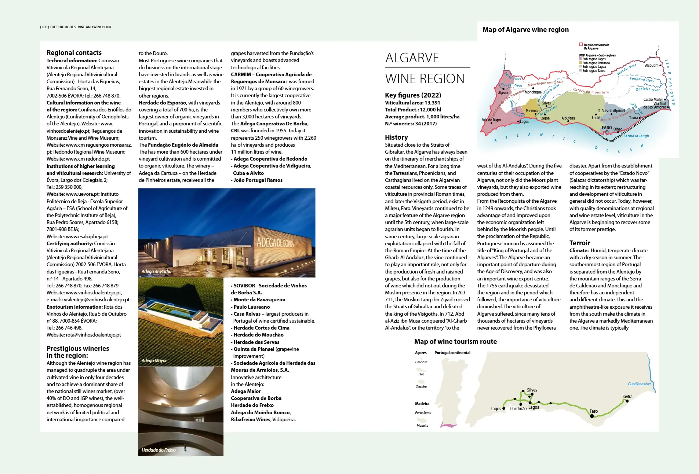
Text · Pages 100–101
Regional contacts Technical information: Comissão Vitivinícola Regional Alentejana (Alentejo Regional Vitivinicultural Commission) - Horta das Figueiras, Rua Fernando Seno, 14, 7002-506 ÉVORA; Tel.: 266 748 870. Cultural information on the wine of the region: Confraria dos Enófilos do Alentejo (Confraternity of Oenophilists of the Alentejo), Website: www. vinhosdoalentejo.pt; Reguengos de Monsaraz Vine and Wine Museum; Website: www.cm reguengos monsaraz. pt; Redondo Regional Wine Museum; Website: www.cm redondo.pt Institutions of higher learning and viticultural research: University of Évora, Largo dos Colegiais, 2; Tel.: 259 350 000, Website: www.uevora.pt; Instituto Politécnico de Beja - Escola Superior Agrária – ESA (School of Agriculture of the Polytechnic Institute of Beja), Rua Pedro Soares, Apartado 6158; 7801-908 BEJA; Website: www.esab.ipbeja.pt Certifying authority: Comissão Vitivinícola Regional Alentejana (Alentejo Regional Vitivinicultural Commission) 7002-506 ÉVORA, Horta das Figueiras - Rua Fernanda Seno, n.º 14 - Apartado 498, Tel.: 266 748 870, Fax: 266 748 879 Website: www.vinhosdoalentejo.pt, e-mail: cvralentejo@vinhosdoalentejo.pt Enotourism information: Rota dos Vinhos do Alentejo, Rua 5 de Outubro nº 88, 7000-854 ÉVORA; Tel.: 266 746 498, Website: rota@vinhosdoalentejo.pt Prestigious wineries in the region: Although the Alentejo wine region has managed to quadruple the area under cultivated vine in only four decades and to achieve a dominant share of the national still wines market, (over 40% of DO and IGP wines), the wellestablished, homogenous regional network is of limited political and international importance compared
to the Douro. Most Portuguese wine companies that do business on the international stage have invested in brands as well as wine estates in the Alentejo.Meanwhile the biggest regional estate invested in other regions. Herdade do Esporão, with vineyards covering a total of 700 ha, is the largest owner of organic vineyards in Portugal, and a proponent of scientific innovation in sustainability and wine tourism. The Fundação Eugénio de Almeida The has more than 600 hectares under vineyard cultivation and is committed to organic viticulture. The winery – Adega da Cartuxa – on the Herdade de Pinheiros estate, receives all the Adega de Borba Adega Mayor
grapes harvested from the Fundação’s vineyards and boasts advanced technological facilities. CARMIM – Cooperativa Agrícola de Reguengos de Monsaraz was formed in 1971 by a group of 60 winegrowers. It is currently the largest cooperative in the Alentejo, with around 800 members who collectively own more than 3,000 hectares of vineyards. The Adega Cooperativa De Borba, CRL was founded in 1955. Today it represents 250 winegrowers with 2,260 ha of vineyards and produces 11 million litres of wine. • Adega Cooperativa de Redondo • Adega Cooperativa de Vidigueira, Cuba e Alvito • João Portugal Ramos • SOVIBOR - Sociedade de Vinhos de Borba S.A. • Monte da Ravasqueira • Paulo Laureano • Casa Relvas – largest producers in Portugal of wine certified sustainable. • Herdade Cortes de Cima • Herdade do Mouchão • Herdade das Servas • Quinta da Plansel (grapevine improvement) • Sociedade Agrícola da Herdade das Mouras de Arraiolos, S.A. Innovative architecture in the Alentejo: Adega Maior Cooperativa de Borba Herdade do Freixo Adega do Moinho Branco, Ribafreixo Wines, Vidigueira.
Herdade do Freixo
Espinhaço d Odelou GUADIANA RIVER
Map of Algarve wine region
ALGARVE WINE REGION Key figures (2022) Viticultural area: 13,391 Total Product.: 12,000 hl Average product. 1,000 litres/ha N.º wineries: 34 (2017) History Situated close to the Straits of Gibraltar, the Algarve has always been on the itinerary of merchant ships of the Mediterranean. For a long time the Tartessians, Phoenicians, and Carthagians lived on the Algarvian coastal resources only. Some traces of viticulture in provincial Roman times, and later the Visigoth period, exist in Milreu, Faro. Vineyards continued to be a major feature of the Algarve region until the 5th century, when large-scale agrarian units began to flourish. In same century, large-scale agrarian exploitation collapsed with the fall of the Roman Empire. At the time of the Gharb-Al Andaluz, the vine continued to play an important role, not only for the production of fresh and raisined grapes, but also for the production of wine which did not out during the Muslim presence in the region. In AD 711, the Muslim Tariq ibn Ziyad crossed the Straits of Gibraltar and defeated the king of the Visigoths. In 712, Abd al-Aziz ibn Musa conquered “Al-Gharb Al-Andalus”, or the territory “to the
Região vitivinícola IG Algarve
DOP Algarve – Sub-regiões
Sub-região Lagos
Vila
S A
eixe river
l j e zur r i v er Monchiq
Aljezur e Cão
mountainMonchique
ue mou ca r Silves
nta iver
Odeáxe r
e river
Portimão
A ra d e
river
do Bispo
Lagos
Lagoa
i
n Ca Albufeira
l
Sub-região Portimão Sub-região Lagoa Sub-região Tavira
Vascão
deirão mountain
S. Brás de Alportel
Loulé
Monte Figo
mou
n
river Foup O Gilã tain Tavira
o river
an de
Alcoutim a river leite river Castro Marim Vila Real de Sto. António
A
T
L
A
N
T
I
C
FARO Olhão Formosa laugh
O
N
C
E
A
west of the Al-Andalus”. During the five centuries of their occupation of the Algarve, not only did the Moors plant vineyards, but they also exported wine produced from them. From the Reconquista of the Algarve in 1249 onwards, the Christians took advantage of and improved upon the economic organization left behind by the Moorish people. Until the proclamation of the Republic, Portuguese monarchs assumed the title of “King of Portugal and of the Algarves”. The Algarve became an important point of departure during the Age of Discovery, and was also an important wine export centre. The 1755 earthquake devastated the region and in the period which followed, the importance of viticulture diminished. The viticulture of Algarve suffered, since many tens of thousands of hectares of vineyards never recovered from the Phylloxera
disaster. Apart from the establishment of cooperatives by the “Estado Novo” (Salazar dictatorship) which was farreaching in its extent; restructuring and development of viticulture in general did not occur. Today, however, with quality denominations at regional and wine estate level, viticulture in the Algarve is beginning to recover some of its former prestige. Terroir Climate: Humid, temperate climate with a dry season in summer. The southernmost region of Portugal is separated from the Alentejo by the mountain ranges of the Serra de Caldeirão and Monchique and therefore has an independent and different climate. This and the amphitheatre-like exposure it receives from the south make the climate in the Algarve a markedly Mediterranean one. The climate is typically
Map of wine tourism route
Açores Graciosa
Portugal continental
Pico Terceira Madeira Porto Santo Madeira
Silves
Lagos
Portimão
Lagoa
Guadiana river Tavira Faro
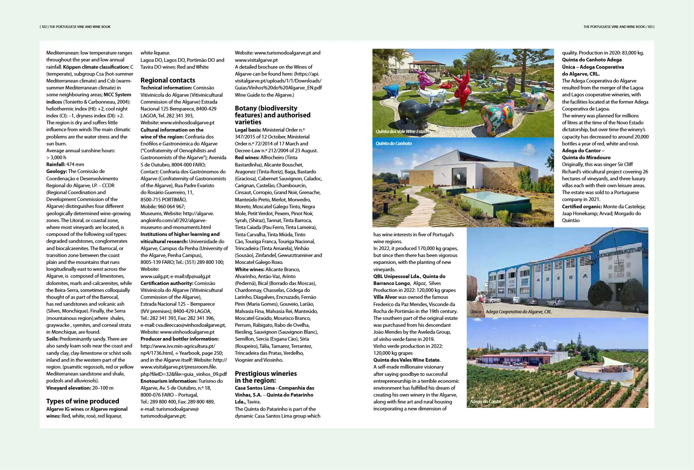
Text · Pages 102–103
Mediterranean: low temperature ranges throughout the year and low annual rainfall. Köppen climate classification: C (temperate), subgroup Csa (hot-summer Mediterranean climate) and Csb (warmsummer Mediterranean climate) in some neighbouring areas; MCC System indices (Tonietto & Carbonneau, 2004): heliothermic index (HI): +2, cool night index (CI): –1, dryness index (DI): +2. The region is dry and suffers little influence from winds The main climatic problems are the water stress and the sun burn. Average annual sunshine hours: > 3,000 h Rainfall: 474 mm Geology: The Comissão de Coordenação e Desenvolvimento Regional do Algarve, I.P. – CCDR (Regional Coordination and Development Commission of the Algarve) distinguishes four different geologically determined wine-growing zones. The Litoral, or coastal zone, where most vineyards are located, is composed of the following soil types: degraded sandstones, conglomerates and biocalcarenites. The Barrocal, or transition zone between the coast plain and the mountains that runs longitudinally east to west across the Algarve, is composed of limestones, dolomites, marls and calcarenites, while the Beira-Serra, sometimes colloquially thought of as part of the Barrocal, has red sandstones and volcanic ash (Silves, Monchique). Finally, the Serra (mountainous region),where shales, graywacke , syenites, and corneal strata in Monchique, are found. Soils: Predominantly sandy. There are also sandy loam soils near the coast and sandy clay, clay-limestone or schist soils inland and in the western part of the region. (psamitic regossols, red or yellow Mediterranean sandstone and shale, podzols and alluviosols). Vineyard elevation: 20–100 m Types of wine produced Algarve IG wines or Algarve regional wines: Red, white, rosé, red liqueur,
white liqueur. Lagoa DO, Lagos DO, Portimão DO and Tavira DO wines: Red and White Regional contacts Technical information: Comissão Vitivinícola do Algarve (Vitivinicultural Commission of the Algarve) Estrada Nacional 125 Bemparece, 8400-429 LAGOA, Tel. 282 341 393, Website: www.vinhosdoalgarve.pt Cultural information on the wine of the region: Confraria dos Enófilos e Gastronómica do Algarve (“Confraternity of Oenophilists and Gastronomists of the Algarve”); Avenida 5 de Outubro, 8004-000 FARO; Contact: Confraria dos Gastrónomos do Algarve (Confraternity of Gastronomists of the Algarve), Rua Padre Evaristo do Rosário Guerreiro, 11, 8500-715 PORTIMÃO, Mobile: 960 064 967; Museums, Website: http://algarve. angloinfo.com/af/292/algarvemuseums-and-monuments.html Institutions of higher learning and viticultural research: Universidade do Algarve, Campus da Penha (University of the Algarve, Penha Campus), 8005-139 FARO; Tel.: (351) 289 800 100; Website: www.ualg.pt; e-mail:sfp@ualg.pt Certification authority: Comissão Vitivinícola do Algarve (Vitivinicultural Commission of the Algarve), Estrada Nacional 125 – Bemparece (IVV premises); 8400-429 LAGOA, Tel.: 282 341 393, Fax: 282 341 396, e-mail: cva.direccao@vinhosdoalgarve.pt, Website: www.vinhosdoalgarve.pt Producer and bottler information: http://www.ivv.min-agricultura.pt/ np4/1736.html, Yearbook, page 250; and in the Algarve itself: Website: http:// www.visitalgarve.pt/pressroom.file. php?fileID=32&file=guia_vinhos_09.pdf Enotourism information: Turismo do Algarve, Av. 5 de Outubro, n.º 18, 8000-076 FARO – Portugal, Tel.: 289 800 400, Fax: 289 800 489, e-mail: turismodoalgarve@ turismodoalgarve.pt;
Website: www.turismodoalgarve.pt and www.visitalgarve.pt A detailed brochure on the Wines of Algarve can be found here: (https://api. visitalgarve.pt/uploads/1/1/Downloads/ Guias/Vinhos%20do%20Algarve_EN.pdf Wine Guide to the Algarve.) Botany (biodiversity features) and authorised varieties Legal basis: Ministerial Order n.º 347/2015 of 12 October, Ministerial Order n.º 72/2014 of 17 March and Decree-Law n.º 212/2004 of 23 August. Red wines: Alfrocheiro (Tinta Bastardinha), Alicante Bouschet, Aragonez (Tinta-Roriz), Baga, Bastardo (Graciosa), Cabernet Sauvignon, Caladoc, Carignan, Castelão, Chambourcin, Cinsaut, Corropio, Grand Noir, Grenache, Manteúdo Preto, Merlot, Monvedro, Moreto, Moscatel Galego Tinto, Negra Mole, Petit Verdot, Pexem, Pinot Noir, Syrah, (Shiraz), Tannat, Tinta Barroca, Tinta Caiada (Pau Ferro, Tinta Lameira), Tinta Carvalha, Tinta Miúda, Tinto Cão, Touriga Franca, Touriga Nacional, Trincadeira (Tinta Amarela), Vinhão (Sousão), Zinfandel, Gewurztraminer and Moscatel Galego Roxo. White wines: Alicante Branco, Alvarinho, Antão-Vaz, Arinto (Pedernã), Bical (Borrado das Moscas), Chardonnay, Chasselas, Códega do Larinho, Diagalves, Encruzado, Fernão Pires (Maria Gomes), Gouveio, Larião, Malvasia Fina, Malvasia Rei, Manteúdo, Moscatel Graúdo, Mourisco Branco, Perrum, Rabigato, Rabo de Ovelha, Riesling, Sauvignon (Sauvignon Blanc), Semillon, Sercia (Esgana Cão), Síria (Roupeiro), Tália, Tamarez, Terrantez, Trincadeira das Pratas, Verdelho, Viognier and Viosinho. Prestigious wineries in the region: Casa Santos Lima - Companhia das Vinhas, S.A. – Quinta do Patarinho Lda., Tavira. The Quinta do Patarinho is part of the dynamic Casa Santos Lima group which
Quinta dos Vale Wine Estates Quinta do Canhoto
quality. Production in 2020: 83,000 kg. Quinta do Canhoto Adega Única – Adega Cooperativa do Algarve, CRL. The Adega Cooperativa do Algarve resulted from the merger of the Lagoa and Lagos cooperative wineries, with the facilities located at the former Adega Cooperativa de Lagoa. The winery was planned for millions of litres at the time of the Novo Estado dictatorship, but over time the winery’s capacity has decreased to around 20,000 bottles a year of red, white and rosé. Adega do Cantor – Quinta do Miradouro Originally, this was singer Sir Cliff Richard’s viticultural project covering 26 hectares of vineyards, and three luxury villas each with their own leisure areas. The estate was sold to a Portuguese company in 2021. Certified organic: Monte da Casteleja; Jaap Honekamp; Arvad; Morgado do Quintão
has wine interests in five of Portugal’s wine regions. In 2022, it produced 170,000 kg grapes, but since then there has been vigorous expansion, with the planting of new vineyards. QBL Unipessoal Lda., Quinta do Barranco Longo, Algoz, Silves Production in 2022: 120,000 kg grapes Villa Alvor was owned the famous Frederico da Paz Mendes, Visconde da Rocha de Portimão in the 19th century. The southern part of the original estate was purchased from his descendant João Mendes by the Aveleda Group, of vinho verde fame in 2019. Vinho verde production in 2022: 120,000 kg grapes Quinta dos Vales Wine Estate. A self-made millionaire visionary after saying goodbye to successful entrepreneurship in a terrible economic environment has fulfilled his dream of creating his own winery in the Algarve, along with fine art and rural housing incorporating a new dimension of
Única – Adega Cooperativa do Algarve, CRL. Adega do Cantor
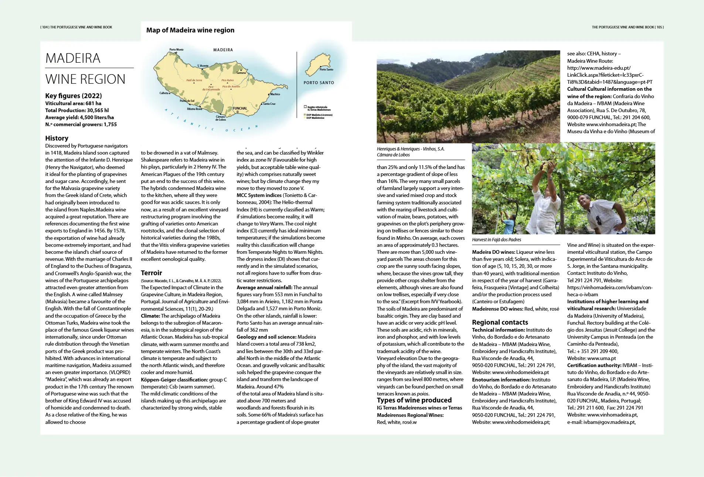
Text · Pages 104–105
Map of Madeira wine region
MADEIRA WINE REGION Key figures (2022) Viticultural area: 681 ha Total Production: 30,565 hl Average yield: 4,500 liters/ha N.º commercial growers: 1,755 History Discovered by Portuguese navigators in 1418, Madeira Island soon captured the attention of the Infante D. Henrique (Henry the Navigator), who deemed it ideal for the planting of grapevines and sugar cane. Accordingly, he sent for the Malvasia grapevine variety from the Greek island of Crete, which had originally been introduced to the island from Naples.Madeira wine acquired a great reputation. There are references documenting the first wine exports to England in 1456. By 1578, the exportation of wine had already become extremely important, and had become the island’s chief source of revenue. With the marriage of Charles II of England to the Duchess of Braganza, and Cromwell’s Anglo-Spanish war, the wines of the Portuguese archipelagos attracted even greater attention from the English. A wine called Malmsey (Malvasia) became a favourite of the English. With the fall of Constantinople and the occupation of Greece by the Ottoman Turks, Madeira wine took the place of the famous Greek liqueur wines internationally, since under Ottoman rule distribution through the Venetian ports of the Greek product was prohibited. With advances in international maritime navigation, Madeira assumed an even greater importance. (VLQPRD) “Madeira”, which was already an export product in the 17th century The renown of Portuguese wine was such that the brother of King Edward IV was accused of homicide and condemned to death. As a close relative of the King, he was allowed to choose
Porto Moniz
MADEIRA
S. Vicente
Santana
Calheta
Paúl da Serra
Pico Ruivo
Pico
Pico do Areeiro
da Encumeada
Ponta do Sol
A
Ribeira Brava
T
L Â N TI
Câmara de Lobos
C
O
FUNCHAL CEA
Machico Santa Cruz N
Porto Santo PORTO SANTO Região vitivinícola IG Terras Madeirenses DOP Madeira (Licorosos) DOP Madeirense
the method of execution and chose to be drowned in a vat of Malmsey. Shakespeare refers to Madeira wine in his plays, particularly in 2 Henry IV. The American Plagues of the 19th century put an end to the success of this wine. The hybrids condemned Madeira wine to the kitchen, where all they were good for was acidic sauces. It is only now, as a result of an excellent vineyard restructuring program involving the grafting of varieties onto American rootstocks, and the clonal selection of historical varieties during the 1980s, that the Vitis vinifera grapevine varieties of Madeira have returned to the former excellent oenological quality. Terroir (Source: Macedo, F. L., & Carvalho, M. Â. A. P. (2022). The Expected Impact of Climate in the Grapevine Culture, in Madeira Region, Portugal. Journal of Agriculture and Environmental Sciences, 11(1), 20-29.) Climate: The archipelago of Madeira belongs to the subregion of Macaronesia, is in the subtropical region of the Atlantic Ocean. Madeira has sub-tropical climate, with warm summer months and temperate winters. The North Coast’s climate is temperate and subject to the north Atlantic winds, and therefore cooler and more humid. Köppen-Geiger classification: group C (temperate): Csb (warm summer). The mild climatic conditions of the islands making up this archipelago are characterized by strong winds, stable
temperatures owing to the proximity of the sea, and can be classified by Winkler index as zone IV (Favourable for high yields, but acceptable table wine quality) which comprises naturally sweet wines; but by climate change they my move to they moved to zone V. MCC System indices (Tonietto & Carbonneau, 2004): The Helio-thermal Index (HI) is currently classified as Warm; if simulations become reality, it will change to Very Warm. The cool night index (CI) currently has ideal minimum temperatures; if the simulations become reality this classification will change from Temperate Nights to Warm Nights. The dryness index (DI) shows that currently and in the simulated scenarios, not all regions have to suffer from drastic water restrictions. Average annual rainfall: The annual figures vary from 553 mm in Funchal to 3,084 mm in Arieiro, 1,182 mm in Ponta Delgada and 1,527 mm in Porto Moniz. On the other islands, rainfall is lower: Porto Santo has an average annual rainfall of 362 mm Geology and soil science: Madeira Island covers a total area of 738 km2, and lies between the 30th and 33rd parallel North in the middle of the Atlantic Ocean. and gravelly volcanic and basaltic soils helped the grapevine conquer the island and transform the landscape of Madeira. Around 47% of the total area of Madeira Island is situated above 700 meters and woodlands and forests flourish in its soils. Some 66% of Madeira’s surface has a percentage gradient of slope greater
see also: CEHA, history – Madeira Wine Route: http://www.madeira-edu.pt/ LinkClick.aspx?fileticket=lc33pxrCTi8%3D&tabid=1487&language=pt-PT Cultural Cultural information on the wine of the region: Confraria do Vinho da Madeira – IVBAM (Madeira Wine Association), Rua 5. De Outubro, 78, 9000-079 FUNCHAL, Tel.: 291 204 600, Website www.vinhomadeira.pt; The Museu da Vinha e do Vinho (Museum of
Henriques & Henriques - Vinhos, S.A. Câmara de Lobos
than 25% and only 11.5% of the land has a percentage gradient of slope of less than 16%. The very many small parcels of farmland largely support a very intensive and varied mixed crop and stock farming system traditionally associated with the rearing of livestock and cultivation of maize, beans, potatoes, with grapevines on the plot’s periphery growing on trellises or fences similar to those found in Minho. On average, each covers an area of approximately 0.3 hectares. There are more than 5,000 such vineyard parcels The areas chosen for this crop are the sunny south facing slopes, where, because the vines grow tall, they provide other crops shelter from the elements, although vines are also found on low trellises, especially if very close to the sea.” (Excerpt from IVV Yearbook). The soils of Madeira are predominant of basaltic origin. They are clay based and have an acidic or very acidic pH level. These soils are acidic, rich in minerals, iron and phosphor, and with low levels of potassium, which all contribute to the trademark acidity of the wine. Vineyard elevation Due to the geography of the island, the vast majority of the vineyards are relatively small in size. ranges from sea level 800 metres, where vinyards can be found perched on small terraces known as poios. Types of wine produced IG Terras Madeirenses wines or Terras Madeirenses Regional Wines: Red, white, rosé.w
Harvest in Fajã dos Padres Madeira DO wines: Liqueur wine less than five years old; Solera, with indication of age (5, 10, 15, 20, 30, or more than 40 years), with traditional mention in respect of the year of harvest (Garrafeira, Frasqueira [Vintage] and Colheita) and/or the production process used (Canteiro or Estufagem) Madeirense DO wines: Red, white, rosé Regional contacts Technical information: Instituto do Vinho, do Bordado e do Artesanato de Madeira – IVBAM (Madeira Wine, Embroidery and Handicrafts Institute), Rua Visconde de Anadia, 44, 9050-020 FUNCHAL, Tel.: 291 224 791, Website: www.vinhodomeideira.pt Enotourism information: Instituto do Vinho, do Bordado e do Artesanato de Madeira – IVBAM (Madeira Wine, Embroidery and Handicrafts Institute), Rua Visconde de Anadia, 44, 9050-020 FUNCHAL, Tel.: 291 224 791, Website: www.vinhodomeideira.pt;
Vine and Wine) is situated on the experimental viticultural station, the Campo Experimental de Viticultura do Arco de S. Jorge, in the Santana municipality. Contact: Instituto do Vinho, Tel 291 224 791, Website: https://vinhomadeira.com/ivbam/conheca-o-ivbam Institutions of higher learning and viticultural research: Universidade da Madeira (University of Madeira), Funchal. Rectory building at the Colégio dos Jesuítas (Jesuit College) and the University Campus in Penteada (on the Caminho da Penteada), Tel.: + 351 291 209 400, Website: www.uma.pt Certification authority: IVBAM – Instituto do Vinho, do Bordado e do Artesanato da Madeira, I.P. (Madeira Wine, Embroidery and Handicrafts Institute) Rua Visconde de Anadia, n.º 44, 9050020 FUNCHAL, Madeira, Portugal; Tel.: 291 211 600, Fax: 291 224 791 Website: www.vinhomadeira.pt, e-mail: ivbam@gov.madeira.pt,
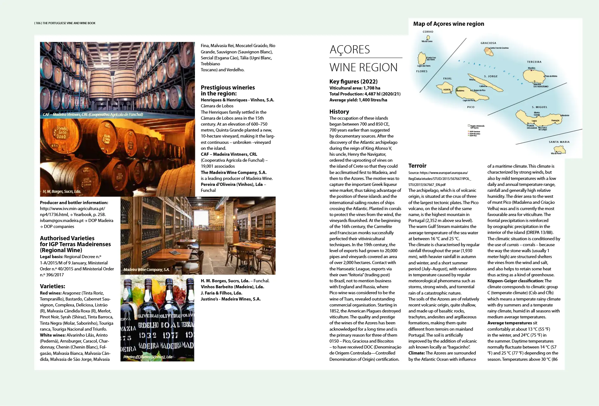
Text · Pages 106–107
CAF – Madeira Vintners, CRL (Cooperativa Agrícola de Funchal)
H, M, Borges, Sucrs, Lda. Producer and bottler information: http://www.ivv.min-agricultura.pt/ np4/1736.html, Yearbook, p. 258. ivbam@gov.madeira.pt DOP Madeira DOP companies Authorised Varieties for IGP Terras Madeirenses (Regional Wine) Legal basis: Regional Decree n.º 1-A/2015/M of 9 January, Ministerial Order n.º 40/2015 and Ministerial Order n.º 396/2017 Varieties: Red wines: Aragonez (Tinta Roriz, Tempranillo), Bastardo, Cabernet Sauvignon, Complexa, Deliciosa, Listrão (R), Malvasia Cândida Roxa (R), Merlot, Pinot Noir, Syrah (Shiraz), Tinta Barroca, Tinta Negra (Molar, Saborinho), Touriga ranca, Touriga Nacional and Triunfo. White wines: Alvarinho Lilás, Arinto (Pedernã), Arnsburger, Caracol, Chardonnay, Chenin (Chenin Blanc), Folgasão, Malvasia Bianca, Malvasia Cândida, Malvasia de São Jorge, Malvasia
Madeira Wine Company, S.A. Pereira d’Oliveira (Vinhos), Lda
Fina, Malvasia Rei, Moscatel Graúdo, Rio Grande, Sauvignon (Sauvignon Blanc), Sercial (Esgana Cão), Tália (Ugni Blanc, Trebbiano Toscano) and Verdelho. Prestigious wineries in the region: Henriques & Henriques - Vinhos, S.A. Câmara de Lobos The Henriques family settled in the Câmara de Lobos area in the 15th century. At an elevation of 600–750 metres, Quinta Grande planted a new, 10-hectare vineyard, making it the largest continuous – unbroken –vineyard on the island. CAF – Madeira Vintners, CRL (Cooperativa Agrícola de Funchal) – 19,001 associados The Madeira Wine Company, S.A. is a leading producer of Madeira Wine. Pereira d’Oliveira (Vinhos), Lda – Funchal H. M. Borges, Sucrs, Lda. – Funchal. Vinhos Barbeito (Madeira), Lda. J. Faria & Filhos, Lda. Justino’s - Madeira Wines, S.A.
AÇORES WINE REGION Key figures (2022) Viticultural area: 1,708 ha Total Production: 4,487 hl (2020/21) Average yield: 1,400 litres/ha History The occupation of these islands began between 700 and 850 CE, 700 years earlier than suggested by documentary sources. After the discovery of the Atlantic archipelago during the reign of King Afonso V, his uncle, Henry the Navigator, ordered the uprooting of vines on the island of Crete so that they could be acclimatised first to Madeira, and then to the Azores. The motive was to capture the important Greek liqueur wine market, thus taking advantage of the position of these islands and the international sailing routes of ships crossing the Atlantic. Planted in corrals to protect the vines from the wind, the vineyards flourished. At the beginning of the 16th century, the Carmelite and Franciscan monks successfully perfected their vitivinicultural techniques. In the 19th century, the level of exports had grown to 20,000 pipes and vineyards covered an area of over 2,000 hectares. Contact with the Hanseatic League, exports via their own “feitoria” (trading post) to Brazil, not to mention business with England and Russia, where Pico wine was considered to be the wine of Tsars, revealed outstanding commercial organisation. Starting in 1852, the American Plagues destroyed viticulture. The quality and prestige of the wines of the Azores has been acknowledged for a long time and is the primary reason for three of them 0150 – Pico, Graciosa and Biscoitos – to have received DOC (Denominação de Origem Controlada—Controlled Denomination of Origin) certification.
Map of Açores wine region CORVO
Vila do Corvo
GRACIOSA Santa Cruz da Graciosa
Santa Cruz das Flores Lages das Flores FLORES
A
T
L
Â
N
T
I
C
FA I A L
Velas
S. JORGE
HORTA
Madalena
Calheta S. Roque do Pico
O C E A
Lages do Pico PICO
Região vitivinícola IGP Açores DOP Graciosa DOP Biscoitos DOP Pico
N
TERCEIRA Biscoitos Praia da Vitória ANGRA DO HEROÍSMO
S. MIGUEL
Ribeira Grande
Lagoa
PONTA
DELGADA Vila Franca
do Campo
Nordeste Povoação
SANTA MARIA
Vila do Porto
Terroir Source: https://www.europarl.europa.eu/ RegData/etudes/STUD/2015/567667/IPOL_ STU(2015)567667_EN.pdf The archipelago, which is of volcanic origin, is situated at the crux of three of the largest tectonic plates. The Pico volcano, on the island of the same name, is the highest mountain in Portugal (2,352 m above sea level). The warm Gulf Stream maintains the average temperature of the sea water at between 16 °C and 25 °C. The climate is characterised by regular rainfall throughout the year (1,930 mm), with heavier rainfall in autumn and winter, and a short summer period (July–August), with variations in temperature caused by regular meteorological phenomena such as storms, strong winds, and torrential rain of a catastrophic nature. The soils of the Azores are of relatively recent volcanic origin, quite shallow, and made up of basaltic rocks, trachytes, andesites and argillaceous formations, making them quite different from terroirs on mainland Portugal. The soil is artificially improved by the addition of volcanic ash known locally as “bagacinho”. Climate: The Azores are surrounded by the Atlantic Ocean with influence
of a maritime climate. This climate is characterized by strong winds, but also by mild temperatures with a low daily and annual temperature range, rainfall and generally high relative humidity. The drier area to the west of munt Pico (Madalena and Criação Velha) was and is currently the most favourable area for viticulture. The frontal precipitation is reinforced by orographic precipitation in the interior of the island (DREPA 13/88). The climatic situation is conditioned by the use of currais – corrals – because the way the stone walls (usually 1 meter high) are structured shelters the vines from the wind and salt, and also helps to retain some heat thus acting as a kind of greenhouse. Köppen-Geiger classification: The climate corresponds to climatic group C (temperate climate) (Csb and Cfb) which means a temperate rainy climate with dry summers and a temperate rainy climate, humid in all seasons with medium average temperatures. Average temperatures sit comfortably at about 13 °C (55 °F) in the winter, and 24°C (75 °F) in the summer. Daytime temperatures normally fluctuate between 14 °C (57 °F) and 25 °C (77 °F) depending on the season. Temperatures above 30 °C (86
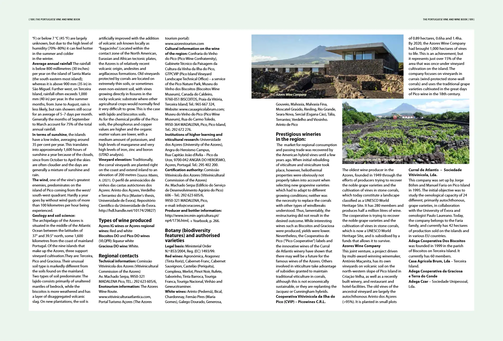
Text · Pages 108–109
°F) or below 7 °C (45 °F) are largely unknown, but due to the high level of humidity (70%–80%) it can feel hotter in the summer and colder in the winter. Average annual rainfall The rainfall is below 800 millimetres (30 inches) per year on the island of Santa Maria (the south eastern most island); whereas it is above 900 mm (35 in) in São Miguel. Further west, on Terceira Island, rainfall often exceeds 1,000 mm (40 in) per year. In the summer months, from June to August, rain is less likely, but rain showers still occur for an average of 5–7 days per month. Generally the months of September to March account for 75% of the total annual rainfall. In terms of sunshine, the islands have a low index, averaging around 35 per cent per year. This translates into approximately 1,600 hours of sunshine a year because of the clouds, since from October to April the skies are often cloudier and the days are generally a mixture of sunshine and rain. The wind, one of the vine's greatest enemies, predominates on the island of Pico coming from the west/ south-west quadrant. Hardly a year goes by without wind gusts of more than 100 kilometres per hour being experienced. Geology and soil science: The archipelago of the Azores is situated in the middle of the Atlantic Ocean between the latitudes of 37° and 39.5° north, some 1,600 kilometres from the coast of mainland Portugal. Of the nine islands that make up the Azores, three support vineyard cultivation.They are: Terceira, Pico and Graciosa. Their unusual soil type is markedly different from the soils found on the mainland. Two types of soil predominate: The lajido consists primarily of unaltered mantles of bedrock, while the biscoitos is more weathered and has a layer of disaggregated volcanic slag. On new plantations, the soil is
artificially improved with the addition of volcanic ash known locally as “bagacinho”. Located within the contact zone of the North American, Eurasian and African tectonic plates, the Azores is of relatively recent volcanic origin, andesites and argillaceous formations. Old vineyards protected by corrals are located on extremely thin soils, or sometimes even non-existent soil, with vines growing directly in fissures in the rocky volcanic substrate where other agricultural crops would normally find it very difficult to grow. This is the case with lajido and biscoitos soils. As for the chemical profile of the Pico soils, the phosphorus and copper values are higher and the organic matter values are lower, with a medium amount of potassium, and high levels of manganese and very high levels of iron, zinc and boron (UTAD analysis). Vineyard elevation: Traditionally, the corral vineyards are planted right on the coast and extend inland to an elevation of 200 metres (Source: Ribeiro, A. (2021). O perfil de aminoácidos de vinhos das castas autóctones dos Açores: Arinto dos Açores, Verdelho e Terrantez do Pico [Master's thesis, Universidade de Évora]. Repositório Científico da Universidade de Évora. http://hdl.handle.net/10174/29827) Types of wine produced Açores IG wines or Açores regional wines: Red and white Biscoitos DO and Pico DO wines (VLQPR): liqueur white Graciosa DO wine: White. Regional contacts Technical information: Comissão Vitivinícola dos Azores (Vitivinicultural Commission of the Azores) Av. Machado Serpa, 9950-321 MADALENA Pico, TEL.: 292 623 605/6, Enotourism information: The Azores Wine Route. www.vitiviniculturaatlantica.com, Portal Turismo Açores (The Azores
tourism portal): www.azorestourism.com Cultural information on the wine of the region: Confraria do Vinho do Pico (Pico Wine Confraternity), Gabinete Técnico da Paisagem da Cultura da Vinha da Ilha do Pico, GTPCVIP (Pico Island Vineyard Landscape Technical Office) – a service of the Pico Nature Park, Museu do Vinho dos Biscoitos (Biscoitos Wine Museum), Canada do Caldeiro, 9760-051 BISCOITOS, Praia da Vitória, Terceira Island; Tel.: 965 667 324, Website: www.casaagricolabrum.com; Museu do Vinho do Pico (Pico Wine Museum), Rua do Carmo Toledo, 9950-364 MADALENA, Pico, Pico Island, Tel.: 292 672 276. Institutions of higher learning and viticultural research: Universidade dos Açores (University of the Azores), Angra do Heroísmo Campus, Rua Capitão João d’Ávlia – Pico da Urze, 9700-042 ANGRA DO HEROÍSMO, Açores, Portugal. Tel.: 295 402 200. Certification authority: Comissão Vitivinícola dos Azores (Vitivinicultural Commission of the Azores) Av. Machado Serpa (Edifício do Serviço de Desenvolvimento Agrário do Pico) 606 – Tel.: 292 623 605/6, 9950-321 MADALENA, Pico, e-mail: info@cvracores.pt Producer and bottler information: http://www.ivv.min-agricultura.pt/ np4/1736.html, Yearbook, p. 266. Botany (biodiversity features) and authorised varieties Legal basis: Ministerial Order N.º 853/2004, Reg. (EC) 1493/99. Red wines: Agronómica, Aragonez (Tinta Roriz), Cabernet-Franc, Cabernet Sauvignon, Castelão (Periquita), Complexa, Merlot, Pinot Noir, Rufete, Saborinho, Tinta Barroca, Touriga Franca, Touriga Nacional, Vinhão and Gewurztraminer. White wines: Arinto (Pedernã), Bical, Chardonnay, Fernão Pires (Maria Gomes), Galego Dourado, Generosa,
Azores Wine Company
of 0.89 hectares, 0.6ha and 1.4ha. By 2020, the Azores Wine Company had brought 1,000 hectares of vines to life. This is an achievement, but it represents just over 15% of the area that was once under vineyard cultivation on the island. The company focuses on vineyards in currais (wind-protected stone-wall corrals) and uses the traditional grape varieties cultivated in the great days of Pico wine in the 18th century.
Gouveio, Malvasia, Malvasia Fina, Moscatel Graúdo, Riesling, Rio Grande, Seara Nova, Sercial (Esgana Cão), Tália, Terrantez, Verdelho and Viosinho. Arinto de Pico
Prestigious wineries in the region: The market for regional consumption and passing trade was recovered by the American hybrid vines until a few years ago. When initial rebuilding of viticulture and viniculture took place, however, heliothermal properties were obviously not properly taken into account when selecting new grapevine varieties which had to adapt to different growing conditions; neither was the necessity to replace the corrals with other types of windbreaks understood. Thus, lamentably, the restructuring did not result in the desired outcome. While interesting wines such as Biscoitos and Graciosa were produced, yields were lower. Nevertheless, the Cooperativa de Pico (“Pico Cooperative”) labels and the innovative wines of the Curral de Atlantis winery have shown that there may well be a future for the famous wines of the Azores. Others involved in viticulture take advantage of subsidies granted to maintain traditional viticulture in corrals, although this is not economically sustainable, or they are replanting the Jacquez or Cunningham hybrids. Cooperativa Vitivinícola da Ilha do Pico (CVIP) – Picowines C.R.L.
Vineyard landscape and Pico Wine Museum The oldest wine producer in the Azores, founded in 1949 through the efforts of producers trying to recover the noble grape varieties and the cultivation of vines in stone corrals, which today constitute a landscape classified as a UNESCO World Heritage Site. It has 280 members and produces half a million litres of wine. The cooperative is trying to recover the noble grape varieties and the cultivation of vines in stone corrals, which is now a UNESCO World Heritage Site, and is subsidised by a funds that allows it to survive. Azores Wine Company This joint venture, a project driven by multi-award-winning winemaker, António Maçanita, has its own vineyards on volcanic soil on the north-western slope of Pico Island in Criação Velha, as well as a recently built winery, and restaurant and hotel-facilities. The old vines of the ancestral vineyard are largely the autochthonous Arinto dos Açores (>95%). It is planted in small plots
Curral de Atlantis – Sociedade Vitivinícola, Lda. This company was set up by Jorge Böhm and Manuel Faria on Pico Island in 1995. The initial objective was to study the oenological capacity of 24 different, primarily autochthonous, grape varieties, in collaboration with the University of Évora and oenologist Paulo Laureano. Today, the company belongs to the Faria family, and currently has 42 hectares of production sold on the islands and in various EU countries. Adega Cooperativa Dos Biscoitos was founded in 1999 in the parish of Biscoitos on Terceira Island. It currently has 60 members. Casa Agrícola Brum, Lda – Terceira Island. Adega Cooperativa da Graciosa e Terra do Conde Adega Czar – Sociedade Unipessoal, Lda.